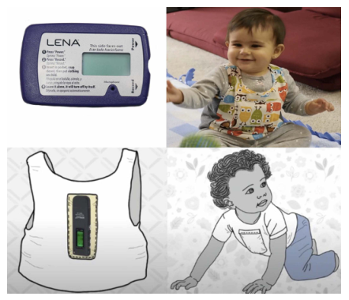
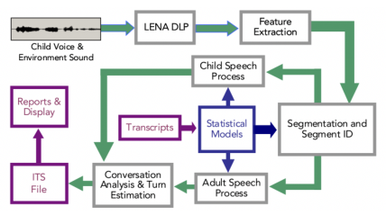
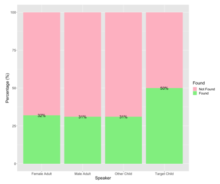
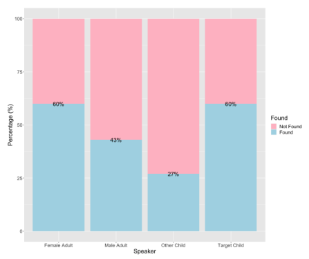
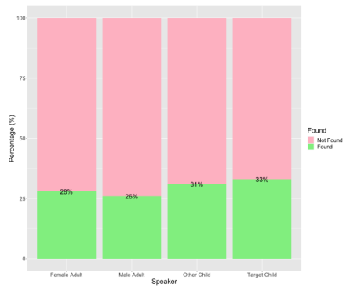
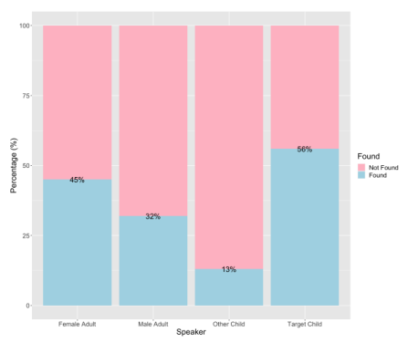
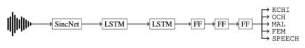

RAIL 2024Tafsiri ya mashine
Rekodi za Muda Mrefu za Kuchunguza Lugha Ambayo Watoto Wanaisikia na Wanayotoa katika Miktadha yenye Uhaba wa Rasilimali
Tafsiri ya mashine, haijakaguliwa na binadamu. Makala asili ndiyo toleo la rejeo; sentensi zilizopigiwa mstari ni zile ambazo ukaguzi wa kiotomatiki haukuwa na uhakika nazo.
Proceedings of the Fifth Workshop on Resources for African Indigenous Languages @ LREC-COLING 2024.
Tafsiri ya Ernst van Gassen (Arktos AI Lab), yenye leseni CC BY-NC 4.0 kama makala asili. Matumizi tena yanaruhusiwa kwa kutaja mwandishi, kwa matumizi yasiyo ya kibiashara tu. Waandishi asili hawajakagua wala kuidhinisha tafsiri hii.
Maandishi matupu ya kutumia tena, pamoja na leseni yake: Kiswahili · LESENI
Taasisi
Joseph R. Coffey, Alejandrina Cristia
Laboratoire de Sciences Cognitives et de Psycholinguistique
Département d’études cognitives, ENS, EHESS, CNRS, PSL University
29 Rue d’Ulm, Paris, France 75005
Anwani za barua pepe zimeondolewa kwa sababu za faragha. Zinapatikana katika PDF asilia.
Muhtasari
Kundi linalokua la utafiti linapendekeza kwamba mfiduo wa mapema wa usemi na lugha kwa watoto wadogo unahusishwa na maendeleo ya lugha baadaye (ikiwa ni pamoja na ucheleweshaji na utambuzi), utayari wa shule, na utendaji wa kitaaluma. Muongo uliopita umeona ongezeko la matumizi ya vifaa vinavyovaliwa na watoto kukusanya rekodi za sauti za muda mrefu na waelimishaji, wachumi, na wanasaikolojia wa maendeleo. Mfumo unaotumiwa sana kuchambua data hii ni LENA, ambao ulifunzwa kwa data ya Kiingereza cha Amerika Kaskazini inayomlenga mtoto na hutoa makadirio ya hesabu za sauti zinazofanana na usemi za watoto, hesabu za maneno ya watu wazima, na hesabu za zamu za mtoto na mtu mzima. Hivi karibuni, njia mbadala za bei nafuu na Programu huria zisizo za LENA zenye mafunzo ya lugha nyingi zimependekezwa. Aina zote mbili za mifumo zimetumika katika miktadha yenye uhaba wa rasilimali, wakati mwingine ya lugha nyingi, ikiwa ni pamoja na Afrika, ambapo upatikanaji wa rasilimali za lugha zilizochapishwa au za kidijitali unaweza kuwa mdogo. Katika makala hii, tunaelezea kila aina ya mfumo (LENA, usio wa LENA), tunatoa taarifa kuhusu data ya sauti iliyokusanywa nayo ambayo inapatikana kwa matumizi tena, tunakagua ushahidi wa Usahihi wa uchambuzi uliopo wa kiotomatiki, na tunabainisha uwezo na mapungufu yanayowezekana ya matumizi yake katika jamii za Kiafrika.
Maneno Muhimu
rekodi za siku nzima, uainishaji wa aina ya sauti, uthibitishaji, maendeleo ya lugha
1. Utangulizi
Maendeleo ya kiteknolojia katika muongo uliopita yamefanya iwe rahisi sana kukusanya kiasi kikubwa cha sauti (na hivi karibuni zaidi, video) kwa kutumia vifaa vya kuvaliwa. Mojawapo ya matumizi ambayo teknolojia hii inaweza kuleta tofauti kubwa zaidi kwa ustawi wa mtu binafsi na jamii inaweza kuwa katika muktadha wa mipango ya elimu ya utotoni. Wanauchumi wamebishana kuwa hatua zinazolenga watoto chini ya umri wa miaka 3 zinaweza kuwa na faida kubwa zaidi kwenye uwekezaji (Heckman, 2008).
Changamoto moja muhimu kwa hatua kama hizo inahusisha kupima athari za hatua hizo, ambazo kwa sasa zinahitaji mahojiano marefu ya wazazi na/au uchunguzi wa mtoto, unaofanywa na watu wenye ujuzi wa hali ya juu, na kuzifanya zisiwe rahisi kutumika katika mazingira yenye uhaba wa rasilimali na ya lugha nyingi. Katika muktadha huu, rekodi za muda mrefu zilizokusanywa kwa vifaa vya kuvaliwa na watoto zinaweza kuleta mabadiliko makubwa, mradi data ya sauti(-video) iliyokusanywa hivyo inatoa taarifa kuhusu ujuzi wa lugha wa mtoto na mazingira ya mtoto. Wakati wataalamu wa teknolojia ya usemi na lugha wanaoamini mapitio ya "teknolojia ya kisasa kabisa" walidhani tatizo la uainishaji wa wazungumzaji lilikuwa limetatuliwa kwa kiasi kikubwa hata kabla ya ujio wa mitandao ya kina ya neva, sasa ni wazi kuwa hata mitandao hii inashindwa inapokabiliwa na kazi ngumu ya kuainisha data inayomlenga mtoto kwa changamoto kama DIHARD (Ryant et al., 2021) na MERLION (Garcia Perera et al., 2023). Na bado, kupitia kazi makini ya taaluma mbalimbali kati ya wataalamu wa teknolojia ya usemi, wanaisimu, na wanasaikolojia wa maendeleo, maendeleo fulani yamepatikana katika kuchambua sauti inayomlenga mtoto ili kutoa taarifa kuhusu usemi ambao mtoto anaupokea (ingizo) na usemi anaoutoa (utoaji).
Katika makala haya, tunawapa washiriki wa RAIL njia ya kuingia kwenye fasihi hii inayoibuka, kwa malengo mawili ya kuwezesha ukusanyaji wa data ya usemi wa kiasili na uchambuzi wake. Kwanza tunatoa usuli na motisha ya rekodi za muda mrefu. Kisha tunatanguliza suluhisho mbili muhimu za vifaa na programu ambazo zimeundwa na kutumika, hasa katika nyanja za saikolojia ya maendeleo na afya ya umma. Tunaangazia fursa na changamoto za suluhisho hizi, tukizingatia changamoto ambazo muktadha wa Afrika na Lugha za Afrika zinaweza kuleta.
1.1. Kwa nini na jinsi ya kuchunguza lugha ya kusema inayopokelewa na kutolewa na watoto wachanga
Kuna hamu inayokua katika uchumi wa maendeleo na sera ya elimu kuhusu jinsi wazazi wanavyoweza kuathiri vyema maendeleo ya mapema ya watoto wao kimataifa (UNICEF, 2019), hasa katika nchi ambako maisha ya watoto ni hatarini kwa usumbufu (Black et al., 2017). Mingi ya afua za hivi karibuni zimelenga kuongeza mara kwa mara mazungumzo kati ya mzazi na mtoto (Suskind et al., 2016; Weber et al., 2017; Wong et al., 2018; Ferjan Ramírez et al., 2019). Mfichuo wa mapema wa watoto wadogo kwa mazungumzo umehusishwa na maendeleo ya lugha (Hoff, 2003; Rowe, 2012; Anderson et al., 2021), utayari wa shule (Forget-Dubois et al., 2009), na ujuzi wa kusoma na kuandika na utendaji wa kitaaluma baadaye (Uccelli and Phillips Galloway, 2017).
Aina hizi za tathmini ni ngumu kufanya kwa kiwango kikubwa. Watafiti wanaopendezwa na ni mara ngapi watoto wanakabiliwa na usemi lazima warekodi familia kwa muda mrefu na waandike kwa mkono sauti kwa ajili ya usemi. Katika utafiti wao wa msingi wa "pengo la maneno milioni 30", Hart na Risley walirekodi saa moja ya mazungumzo ya mzazi na mtoto kila mwezi kutoka kaya 42 kwa miaka 2½, na kusababisha zaidi ya saa 1300 za mazungumzo (Hart na Risley, 1995). Kila saa ya mazungumzo ilichukua wastani wa saa 8 kuandikwa, na kusababisha zaidi ya saa 10,000 za kazi ya binadamu ya uandikaji. Hivi karibuni zaidi, watafiti wanaofanya kazi na rekodi za muda mrefu walikadiria kwamba ugawaji sahihi na uandikaji wa usemi wa watoto na watu wazima katika data kama hiyo kwa kweli unahitaji saa 40 kwa kila saa ya data ya sauti (Bergelson et al., 2023).
Mbinu hizi mara nyingi zina upatanifu mdogo na jamii zilizo nje ya mazingira ya mijini, ya Kimagharibi. Zinahitaji wahesabuji waliofunzwa ambao wana ufikiaji wa jamii na ujuzi wa lugha za kienyeji ili kurekodi, kuandika, na kuchambua vipimo vya usemi. Uwepo wa watafiti (karibu kila mara watu wa nje) katika jamii hizi unabeba hatari kubwa ya athari za mtazamaji kwenye usemi uliopimwa. Vipimo vya lugha ya mtoto pia ni vigumu kukusanya. Watoto mara nyingi hulelewa katika mazingira ya lugha nyingi, jambo linalofanya kipimo kimoja cha uwezo wa lugha kiwe kigumu kubainishwa. Zaidi ya hayo, katika jamii ambapo ulezi wa watoto kwa pamoja ni jambo la kawaida, mzazi mmoja huenda asiweze kutoa taarifa kamili ya lugha ya watoto.
Hivyo, upatikanaji wa programu inayoweza kutenga na kuchanganua haraka usemi kutoka saa nyingi za sauti iliyorekodiwa umekuwa na manufaa makubwa katika kufanya tafiti nyingi kati ya hizi. Ikiwa uchanganuzi huu wa kiotomatiki ungekuwa "sahihi vya kutosha", rekodi za muda mrefu zinaweza kuwa na faida hasa katika kubainisha mazingira ya awali ya lugha ya watoto barani Afrika, hasa katika jamii za vijijini zaidi. Kwa kawaida, vifaa vinaweza kuwekwa kwenye mifuko ya watoto na kuachwa vikiwa vimewashwa kwa muda wote wa maisha ya betri yao ya saa 16. Vifaa hivyo haviingilii na husahaulika kwa urahisi, hivyo kuepusha usumbufu unaosababishwa na mtazamaji wa nje na kutoa makadirio ya usemi wakati wa vipindi vya siku na shughuli ambazo mtafiti kwa kawaida huenda asiwe na ufikiaji wake. Baadhi ya watafiti wamegundua kwamba vipindi hivi huelekea kuwa na msongamano mkubwa zaidi wa usemi (Casillas et al., 2019).
Mifumo hii pia huepuka changamoto zinazohusiana na kunakili (mara nyingi lugha nyingi) ambazo huenda zisiwe na mfumo rasmi wa uandishi, au ambazo wazungumzaji wake kwa kawaida wameelimishwa na wanajua kusoma na kuandika katika lugha tofauti (kwa mfano, Kiingereza, Kifaransa, Kiarabu), hali ambayo hukutwa mara nyingi wakati wa kufanya kazi na lugha zenye rasilimali chache. Aidha, kwa matumizi mengi, si lazima kutoa nakala za kile kilichosemwa. Badala yake, inatosha kuwa na makadirio elekezi ya kiasi gani watoto waliongea na kiasi gani watu wengine waliongea, jambo ambalo linaweza kuwa (angalau kwa nadharia) lisiloegemea upande wowote kwa lugha maalum au lugha zinazotumika katika jamii.
2. Mifumo miwili ya rekodi za muda mrefu
Hapa tunatoa muhtasari wa mifano miwili ya maunzi + mifumo ya diarization ya usemi: LENA na mibadala isiyo ya LENA (tazama Kielelezo 1). Ule wa kwanza ni mfumo unaotumika sana uliotengenezwa mwaka 2009 nchini Marekani kwa madhumuni ya kutoa makadirio ya usemi kwa Kiingereza, lakini baadaye ukatumika katika mazingira mbalimbali, ya mijini na vijijini, ya lugha moja na ya lugha nyingi. Ule wa pili unajumuisha mifumo mipya zaidi iliyotengenezwa mwaka 2019 na timu shirikishi ya wasomi kwa lengo lililowekwa wazi la kuunda mfumo imara wa kitamaduni mtambuka kwa ajili ya kutoa vipimo vya kiotomatiki vinavyotegemea usemi, ukijumuisha mbinu mbalimbali za kurekodi na kuchambua.

Kielelezo 1: Juu: Kifaa cha kurekodi cha LENA kimewekwa kwenye fulana ya mtoto (kutoka Listen and Talk); Chini: kifaa cha kurekodi cha USB kimewekwa kwenye mfuko wa shati la mtoto (kutoka video zilizotayarishwa na timu ya LAAC)
2.1. Mfano 1 - Mfumo wa LENA
2.1.1. Muhtasari
LENA (Uchambuzi wa Mazingira ya Lugha) ni programu iliyounganishwa ya kurekodi na kuainisha usemi iliyoundwa kwa madhumuni ya kuchunguza mazingira ya awali ya kiisimu ya watoto. Vifaa vya kurekodi vya LENA ni vidogo (8.5cm x 5.5cm x 1.25cm) na vina maikrofoni ya pande zote, yenye mwitikio tambarare wa masafa katika kiwango cha 20 hz-20 khz, ingawa sauti hupitishwa kwa mkanda wa 70-10kHz (Kielelezo 1). Timu ya LENA mara nyingi hueleza hili kuwa nyeti zaidi kwa sauti iliyo ndani ya eneo la mita 3 (Ford et al., 2008), ingawa ukubwa wa sauti ni kigezo muhimu zaidi kuliko umbali. Rekodi ya sauti hatimaye hupakiwa kwenye programu ya LENA, ambapo wakati huo hupunguzwa mgandamizo kuwa 16-bit, 16kHz katika umbizo la PCM.
Mbinu za uchambuzi wa usemi zilitengenezwa mapema miaka ya 2000 na hazijasasishwa tangu kuibuka kwa mitandao ya neva inayojirudia. Mlolongo wa uchambuzi ni tata na una awamu kadhaa lakini mambo muhimu zaidi ni yafuatayo (tazama Kielelezo 2) (Xu et al., 2008). Kwanza, vigawo vya kepestramu vya masafa ya mel (MFCCs, vinavyowakilisha ishara ya sauti kwa njia inayoiga mwitikio wa mfumo wa kusikia wa binadamu kwa masafa tofauti) hutolewa katika madirisha mafupi. Hivi kisha huwasilishwa kwa Muundo wa Mchanganyiko wa Gaussian wa Muda wa Chini, aina ya Muundo wa Markov Uliofichwa, ili kufanya ugawaji wa awali katika mojawapo ya kategoria nane (Mtoto Lengwa, Mtu Mzima wa Kiume, Mtu Mzima wa Kike, Mtoto Mwingine, Kelele za Kielektroniki (yaani, TV, redio), Kelele, Mwingiliano, na Kimya), kila moja ikiwakilisha muundo tofauti wa kitakwimu unaotokana na data ya mafunzo. Hii inasababisha ugawaji wa, kwa mfano, saa 16 za sauti kama mfuatano wa sehemu za kila moja ya aina hizo, ambazo urefu wake wa chini ni ms 600. Kisha, kila moja ya sehemu hizi huwasilishwa kwa jaribio la uwiano wa uwezekano ili kubaini kama ina uwezekano mkubwa wa kuwa wa kategoria asili kuliko kuainishwa kama Kimya. Sehemu zinazolingana vyema na kategoria asili huainishwa kama "karibu na wazi," huku sehemu zisizolingana huainishwa kama "hafifu" na hutengwa kwenye uchanganuzi unaofuata.
Sehemu za watu wazima "karibu na wazi" huchakatwa zaidi ili kutoa makadirio kwa undani zaidi, kwa kutumia marekebisho ya kisimbuzi cha fonimu cha CMU Sphinx (kilichofunzwa kwenye habari za utangazaji) kukadiria idadi ya konsonanti na vokali. Sehemu za kiume na kike za watu wazima hutumiwa kupata kipimo cha hesabu ya maneno ya watu wazima (AWC). Sehemu "karibu na wazi" zinazohusishwa na Mtoto Lengwa huwasilishwa kwa kiainishaji kingine ili kugawanya sehemu ya mtoto kuwa mfuatano bora zaidi wa ishara zinazofanana na usemi, kilio, na nyingine zisizobadilika (kwa mfano, kukoroma, kuteuka). Sehemu zinazofanana na usemi huitwa "matamshi" na huhesabiwa ili kutoa kipimo cha milio ya sauti ya mtoto (CVC). Kwa kuongezea, mabadilishano ya mazungumzo au "zamu" (CTC) kati ya mtoto lengwa na walezi wake watu wazima hukokotolewa kwa kipindi chochote cha sekunde tano kilicho na tamshi la Mtoto Lengwa na sehemu yoyote ya Mtu Mzima.
Lengo kuu la mfumo wa LENA ni kuwapa watumiaji (kwa mfano, wazazi, waelimishaji, watafiti) zana ya kuelezea mazingira ya lugha asilia ya watoto bila kuhitaji utaalamu wowote wa kiufundi wala ufikiaji wa rasilimali za kompyuta. Wakfu wa LENA hutoa programu mbalimbali zinazolenga mahitaji mahususi ya wateja wake, kama vile programu za kielimu kwa wazazi (LENA Start) na waelimishaji (LENA Grow) zinazowaelekeza watumiaji jinsi ya kutumia kifaa cha kurekodi na programu ili kufuatilia matumizi yao wenyewe ya lugha karibu na watoto (Elmquist et al., 2021). Wakfu wa LENA pia hutoa mfumo wa uchakataji unaotegemea wingu (LENA SP) kwa watafiti wanaotaka kukusanya na kuchakata data kutoka maeneo mengi.
LENA SP ni huduma inayoweza kufanywa upya inayotegemea usajili na ada ya awali ya uanzishaji ya dola za Marekani 5000. Bei zaidi inategemea ni washiriki wangapi wanaofuatiliwa kwa wakati mmoja: dola za Marekani 2400 kwa hadi 30 na dola za Marekani 3900 kwa hadi 50, na dola za Marekani 1400 kwa kila washiriki 25 wa ziada wanaofuatiliwa kwa wakati mmoja. Bei ya vifaa vya kurekodi vya LENA inagharimu dola za Marekani 329, pamoja na punguzo la bei kwa ununuzi wa wingi. Mashati na fulana za mifuko zenye msuguano mdogo zinazopendekezwa na LENA ni dola 25 kila kimoja.

Kielelezo cha 2: Mchoro wa mchakato wa uchambuzi wa sauti wa LENA (Xu et al., 2008)
2.2. Utendaji wa suluhisho la LENA
Uthibitishaji wa awali wa mfumo wa LENA ulifanywa na LENA Foundation kwa kulinganisha matokeo ya usemi ya kiotomatiki na maandishi yaliyosimbwa na binadamu (Gilkerson et al., 2008; Xu et al., 2009). Walichukua sampuli ya saa moja ya sauti kutoka kwa rekodi 329 za watoto 329 wenye umri wa miezi 2-42. Wafafanuzi binadamu walisimba fremu za 10ms za sauti hii kwa kutumia kategoria zilezile kama programu ya LENA. Uainishaji ulitathminiwa kwa vipimo viwili: kumbuko tambuzi (au uelekevu) na ushabaha. Kumbuko tambuzi hupima ni kiasi gani cha kile mfafanuzi binadamu alichokiainisha kama usemi ambacho LENA ilikitambua kwa usahihi, huku ushabaha ukipima ni kiasi gani cha kile LENA ilichokiainisha kama usemi kilichowekwa katika kategoria kwa usahihi. Waligundua viwango vya juu kiasi vya kumbuko tambuzi na ushabaha kwa kategoria za Mtoto Lengwa (kiwango cha kumbuko tambuzi 67%; kiwango cha ushabaha 75%) na Mtu Mzima wa Kike (kiwango cha kumbuko tambuzi 74%; kiwango cha ushabaha 67%), ingawa ushabaha ulikuwa wa chini (kama ilivyotarajiwa) kwa kategoria ya Mtoto Mwingine (kiwango cha kumbuko tambuzi 64%, kiwango cha ushabaha 27%) (Gilkerson and Richards, 2020). Tafiti zilizofuata zimeunga mkono makadirio haya, huku mapitio ya uthibitishaji wa LENA yakigundua kwamba katika lugha zote, kumbuko tambuzi na ushabaha kwa kategoria vilishuka hadi 59% na 68% mtawalia kwa wastani (Cristia et al., 2020).
LENA pia imekuwa chini ya uthibitishaji katika lugha nyingi zisizo za Kiingereza ambapo imeonyesha utendaji mzuri. Hasa, matokeo ya LENA yameonyeshwa kufanya vizuri katika lugha za toni kama vile Shanghainese-Mandarin (Gilkerson et al., 2015) na Kivietinamu (Ganek na Eriks-Brophy, 2018), na pia katika lugha zilizo na orodha za kifonetiki tofauti na Kiingereza kama vile Kiarabu/Kiebrania (Levin-Asher et al., 2023) ambazo zina konsonanti za kooni. Matokeo haya yanaweza kuwa ishara nzuri kwa tafiti za Lugha za Afrika, ambazo ni tofauti sana kitipolojia na zinaweza kujumuisha vipengele bainifu kama vile toni (Lugha za Kiniger-Kongo) na konsonanti za midoko (lugha za Khoisan) (Dryer na Haspelmath, 2013).
Tafiti pia zimechunguza uwiano kati ya manukuu ya usemi na makadirio ya usemi ya LENA. Cristia na wenzake walipata uwiano wa juu ulioripotiwa kati ya vipimo vya usemi ulionukuliwa na hesabu za maneno ya watu wazima (r=0.79, n=13) na hesabu za sauti za mtoto (r=0.77, n=5) katika sampuli yao ya utafiti, ingawa uwiano ulikuwa chini kwa zamu za mazungumzo (r=0.36, n=6) (Cristia et al., 2020). Matokeo haya yanapendekeza kwamba uainishaji wa LENA unafanya kazi kwa usahihi kwenye sehemu kubwa ya usemi uliomo katika rekodi.
Kuna sababu za kuamini kwamba mazingira ya lugha ya watoto katika nchi za Afrika yanaweza kuwa tofauti na sampuli ambazo mifumo hii imefunzwa kutambua, hasa katika jamii za vijijini. Watoto wanaweza kutumia sehemu kubwa ya siku yao nje, ambapo kuna kelele nyingi zaidi ambazo zinaweza kufanya makadirio ya mazungumzo kuwa na usahihi mdogo. Uchambuzi mmoja wa hivi karibuni ambao haujachapishwa, (ikubaliwe kwamba unategemea pointi chache sana za data), ulipendekeza kuwa hakuna tofauti katika Usahihi kati ya sampuli za vijijini na mijini (Bergelson et al., 2023).
Hata hivyo, Cristia na wenzake wanabainisha mapungufu kadhaa ya kimbinu yaliyoenea katika tafiti nyingi hizi. Kwanza, tathmini nyingi za mfumo wa LENA hazikupitiwa na wenzao, na mara nyingi hazikuripoti kikamilifu mbinu au matokeo. Pili, tathmini nyingi za LENA zilizingatia tu sauti iliyo na usemi na si Kimya, Kelele, au Mwingiliano. Mwishowe, tathmini za LENA mara nyingi zililenga sampuli za sauti zilizo na matukio ya kilele ya usemi wa mtu mzima au mtoto, badala ya kuchukua sampuli kwa nasibu au mara kwa mara, jambo ambalo lingeweza kuzuia sehemu za sauti zenye kelele zaidi na ngumu zaidi kuchanganua zisijumuishwe katika tathmini. Kila moja ya chaguo hizi za kimbinu inaweza kuongeza makadirio ya Usahihi kwa njia isiyo ya asili.
Kama ufuatiliaji wa mapitio yao ya kimfumo, Cristia na wenzake walichunguza mkusanyiko wa korasi unaojumuisha saa 4.6 za usemi wa lugha ya Kiingereza uliofafanuliwa kutoka Marekani na Uingereza, na saa 0.7 za usemi kutoka korasi nyingine iliyokusanywa kutoka kijiji cha Tsimane' kaskazini mwa Bolivia, wakichukua sampuli kwa nasibu au mara kwa mara kutoka kwa sauti na kujumuisha kategoria zisizo za usemi katika vipimo vyao vya tathmini (Cristia et al., 2021). Waligundua kwamba viwango vya Kumbuko tambuzi vilikuwa 50% kwa Mtoto Lengwa, lakini uainishaji mwingine wote wa wazungumzaji ulikuwa karibu 30%. Viwango vya Ushabaha vilikuwa 60% kwa Mwanamke Mtu Mzima na Mtoto Lengwa, lakini ni 43% tu kwa Mwanamume Mtu Mzima na 27% kwa Mtoto Mwingine. Kinyume chake, uwiano kati ya sampuli zilizonakiliwa na makadirio ya usemi wa LENA ulikuwa imara (r=0.65 kwa AWC; r=0.70 CVC), ingawa CTC bado ilibaki nyuma (r=0.36) (tazama Kielelezo 3).
Kwa ujumla, makadirio ya usemi wa mtoto na mtu mzima yalibaki imara, lakini Kumbuko tambuzi ilikuwa chini sana kuliko katika uthibitishaji wa awali, na ni Mwanamke Mtu Mzima na Mtoto Lengwa pekee waliodumisha Ushabaha unaolinganishwa kwa kiasi fulani. Kama ilivyokuwa katika uthibitisho wa awali, waligundua utendaji duni hasa katika kutofautisha sehemu za watoto walengwa kutoka sehemu zingine za watoto. Ugunduzi unaojirudia katika jamii za vijijini ni kwamba watoto hutumia muda mwingi zaidi katika mazungumzo na watoto wengine kuliko wanavyofanya na watu wazima (Shneidman and Goldin-Meadow, 2012; Loukatou et al., 2022). Kwa sababu hiyo, mifumo lazima iweze kutofautisha kwa usahihi mtoto anayevaa kifaa cha kurekodi kutoka kwa watoto wengine katika eneo la karibu. Kwa ufahamu wetu, Wakfu wa LENA hauna mipango yoyote ya sasa ya kuboresha kipengele hiki cha mfumo wao.
2.3. Matumizi ya mfumo wa LENA na data inayopatikana
LENA ni mfumo unaonyumbulika, wenye matumizi katika utafiti wa kimsingi (Weisleder and Fernald, 2013; Romeo et al., 2018), utambuzi wa mapema wa matatizo ya ukuaji au uchelewaji (Richards et al., 2010), na uingiliaji kati wa utotoni (Wong et al., 2018; Ferjan Ramírez et al., 2019; Elmquist et al., 2021).
Kwa ujumla, tafiti nyingi zinazotumia LENA zimetoka Marekani ambako Wakfu wa LENA una makao yake makuu (Wang et al., 2020). Homebank, hifadhi inayopatikana kwa umma ya rekodi za muda mrefu, ina korasi 18 za rekodi kutoka kwa zaidi ya watoto 300. Kati ya hizi, nne zina data kutoka lugha nyingine isipokuwa Kiingereza, tatu kati ya hizo zilikusanywa nje ya Marekani. Hata hivyo, LENA inazidi kutumika kimataifa. Utafiti wa hivi karibuni wa maeneo mengi ulichunguza matumizi ya LENA katika nchi 12 katika lugha 10 tofauti, zikiwemo jamii tatu za vijijini (Tsimane' huko Bolivia, Yélî Dnye kwenye Kisiwa cha Rossel, na watoto wanaozungumza Kiwolofu katika Senegal ya vijijini) (Bergelson et al., 2023).


Kielelezo 3: Takwimu za Kumbuko tambuzi (juu) na Ushabaha (chini) kutoka rekodi za kaya za Marekani, Uingereza, na Tsimane (Cristia et al., 2021)
2.4. Uwezekano wa matumizi katika nchi za Afrika
Usahihi wa mifumo ya diarization ya usemi unategemea uwezo wake wa kushughulikia changamoto mahususi za jamii za vijijini za Afrika. Hadi sasa, kwa ufahamu wetu kumekuwa na tathmini moja tu ya mfumo wa LENA iliyofanywa katika lugha ya Kiafrika. Coffey, Zhang, & Spelke walichunguza saa 52 za sauti kutoka kwa sampuli ndogo ya watoto 4 wanaozungumza Kiakan (miezi 15.5 hadi 41) wanaoishi Accra, Ghana (Coffey et al., 2023). Walichukua sampuli ya dakika 2 za sauti mara kwa mara kutoka kila saa ya rekodi na kuweka msimbo kila moja kulingana na mpango wa uwekaji msimbo wa ACLEW (Cristia et al., 2021). Waligundua viwango vya chini kiasi vya Kumbuko tambuzi kwa wasemaji wote (28% ya Mwanamke Mtu Mzima; 26% ya Mwanamume Mtu Mzima; 31% ya Mtoto Mwingine na 33% ya Mtoto Anayelengwa). Pia waligundua viwango vya juu zaidi vya Ushabaha kwa Mwanamke Mtu Mzima (45%) na Mtoto Anayelengwa (56%), lakini si kwa Mwanamume Mtu Mzima (32%) au Watoto Wengine (13%) (Kielelezo 4).
Tukilinganisha matokeo haya na yale yaliyoonyeshwa katika Kielelezo 3, tunapata viwango sawa vya kumbuko tambuzi katika kategoria zote za wasemaji isipokuwa kwa Mtoto Anayelengwa, ambavyo ni vya chini (33% dhidi ya 50%). Kinyume chake, wanapata viwango linganifu vya ushabaha kwa Mtoto Anayelengwa, lakini viwango vya chini kiasi kwa kategoria nyingine zote. Matokeo haya yanapendekeza kwamba usahihi wa LENA unaweza kuwa wa chini katika mazingira yenye kelele zaidi (ni 10% tu ya sampuli ya Cristia et al. ilitoka katika sampuli ya vijijini isiyo ya Kimagharibi), lakini inaweza kunasa kiasi linganifu cha usemi kwa tafiti nyingine zinazofanana. LENA pia inaonekana kupata ugumu wa kutofautisha usemi wa Mtoto Lengwa na usemi wa Mtoto Mwingine: 25% ya usemi wa Mtoto Lengwa uliosimbwa na binadamu uliainishwa kama wa Mtoto Mwingine na kifaa cha LENA.
Vivyo hivyo, kumekuwa na utafiti mmoja tu uliochapishwa barani Afrika ambao umehusisha vipimo vya usemi vya LENA na lugha ya watoto. Weber, Fernald, na Diop walitathmini athari za afua ya uzazi iliyoundwa kuhimiza mwingiliano zaidi wa maneno kati ya akina mama na watoto wao wenye umri wa miezi 4 hadi 31 katika maeneo ya vijijini ya Senegal kwa kufuatilia usemi unaoelekezwa kwa mtoto siku nzima kwa kutumia LENA (Weber et al., 2017). Waligundua watoto wa akina mama waliopokea afua hiyo walikuwa na msamiati mkubwa kuliko watoto wa kikundi cha udhibiti. Licha ya ufanisi wa afua hiyo katika kuongeza usemi wa kimama wakati wa kipindi kifupi cha mchezo kilichorekodiwa, hawakugundua vipimo vya usemi vya LENA vikihusiana na matokeo katika kundi lolote. Matokeo haya yanapingana na matokeo ya tafiti za LENA kwingineko, ambazo zimegundua uwiano thabiti kati ya vipimo vya usemi vya LENA na lugha ya watoto takriban sawa kwa ukubwa na tafiti zinazotumia vipimo vya usemi vilivyonakiliwa (Wang et al., 2020; Anderson et al., 2021).
2.5. Muhtasari
Faida kuu za mfumo wa LENA ni umaarufu wake, urahisi wa matumizi, upatikanaji wa data, na uthibitisho madhubuti katika lugha nyingi na kundi linalozidi kuwa la kimataifa la watumiaji. LENA ni mfumo madhubuti wa uainishaji wa usemi ambao una matumizi yenye matumaini katika utafiti, elimu, na afya ya umma barani Afrika. Hata hivyo, bado kuna mapungufu makubwa. LENA SP ni ghali (kiwango cha chini dola za Marekani 7400, bila kujumuisha gharama ya vifaa), hivyo kufanya utekelezaji kuwa mgumu kwa miradi ya ndani yenye bajeti ndogo, na pia kwa kiwango kikubwa. Mfumo huo, ikiwa ni pamoja na vifaa na programu, pia ni wa umiliki, hivyo kufanya mabadiliko au maboresho ya kibinafsi kwa ajili ya miradi maalum kuwa haiwezekani kutekelezwa. Kwa sababu LENA SP huhifadhi data kwenye seva za wingu zinazopangishwa ndani ya Marekani, watumiaji katika nchi nyingine wanaweza kupata ugumu wa kutumia LENA bila kukiuka sheria za faragha za data. Mwishowe, LENA imeonyeshwa kuwa na Usahihi wa chini katika kutofautisha Watoto Wengine kutoka kwa Mtoto Anayelengwa, jambo ambalo linaweza kusababisha matatizo katika jamii ambapo ulezi wa watoto ni jambo la kawaida (Barry and Paxson, 1971; Zukow-Goldring, 2002) na sehemu kubwa ya usemi kwa watoto hutoka kwa ndugu zao na rika (Shneidman and Goldin-Meadow, 2012; Loukatou et al., 2022). Ingawa kuna faida nyingi za kutumia LENA katika miradi yenye bajeti ya kutosha na idhini ya kitaasisi, mambo haya yanaweza kufanya matumizi ya LENA yasiwezekane katika mazingira mengine.


Kielelezo 4: Takwimu za Kumbuko tambuzi (juu) na Ushabaha (chini) kutoka rekodi za kaya za Ghana (Coffey et al., 2023)
3. Mfano 2 - Mfumo usio wa LENA
3.1. Muhtasari
Watafiti ambao hawakuweza au hawakutaka kutumia mfumo wa LENA wamegeukia vinasa sauti vingine. Kwa mfano, Marisa Casillas aliweka kamba ya kubeba ya ukubwa wa mtoto mchanga ikiwa na kinasa sauti cha Olympus (awali kilichotengenezwa kwa ajili ya kazi ya kiisimu kuhusu mazungumzo), na kukitumia kukusanya data ya muda mrefu katika kijiji cha Tseltal nchini Mexico na maeneo mengine kadhaa katika Kisiwa cha Rossel, Papua New Guinea (Casillas et al., 2019, 2021). Cristia na wenzake walitumia Olympus hii pamoja na vifaa vidogo zaidi vya USB vya "kijasusi" huko Bolivia na Vanuatu (Scaff et al., 2024; Cristia et al., 2023). Mbinu inayotegemea USB ilivutia umakini mkubwa kutoka kwa wachumi wanaofanya kazi katika eneo la Pasifiki kwa sababu bei yake ya chini (dola 20 za Marekani/kifaa) iliwezesha ukusanyaji wa data kwa kiwango kikubwa. Sifa sahihi za kiufundi za maikrofoni, vinasa sauti, na faili za sauti hutegemea vifaa mahususi na mipangilio yake. Kwa mfano, Olympus aliyotumia Casillas inaweza kupangwa kurekodi faili za .mp3, ambapo betri ingedumu kwa saa 22 mfululizo, ikiwa na masafa hadi 22 kHz lakini viwango vya biti vya chini kuliko ikiwa .wav itatumika badala yake. USB za "kijasusi" mara nyingi hurekodi kwa masafa ya sampuli karibu na ya LENA (15kHz) na kina cha biti 8.
Mara tu rekodi zinapopatikana kwa kifaa chochote kinachofaa, zinaweza kuchakatwa kwa kutumia Programu huria inayoitwa Voice Type Classifier (VTC). Vipengele muhimu vya VTC vilitengenezwa wakati na baada ya Warsha ya Majira ya Joto ya Jelinek kuhusu Teknolojia ya Usemi na Lugha, ambayo iliruhusu kupima aina mbalimbali za vipengele vya pembejeo, kazi, na usanifu (Lavechin et al., 2020). Muundo bora zaidi ulipokea kama pembejeo mawimbi ghafi na kuzichakata kupitia Sincnet, ikifuatiwa na mtandao wa neva wa Long Short-Term Memory (LSTM) wenye tabaka tatu zilizounganishwa kikamilifu (tazama Kielelezo 5). Sincnet ni aina ya usanifu wa neva ambao hujaribu kujifunza vipengele vya sauti ili kuelezea mawimbi ya pembejeo inayopewa, na katika majaribio yetu, tuligundua kuwa ilifanya vizuri zaidi kuliko aina nyingine za uwakilishi (kama vile MFCC zinazotumiwa na LENA). LSTM ni aina ya mitandao ya neva inayojirudia, inayofaa hasa kwa data ya mfuatano, ambayo inafaa kwa mfululizo wa muda kama usemi. Kupitia mchakato huu, sauti hugawanywa katika Mwanamke Mtu Mzima, Mwanaume Mtu Mzima, Mtoto Lengwa, na Watoto Wengine, huku yoyote kati ya haya yakipishana na mengine. Seti ya mafunzo ilikuwa na data inayomlenga mtoto kutoka asili na mazingira mbalimbali ya kilugha ikijumuisha lugha kama vile Min (lugha ya toni ya Kisino-Tibetani), Kifaransa, Ju'hoan (lugha ya Kikhoisan yenye milio ya kubofya), Tsimane' (lugha ya kiasili ya Bolivia), na Kiingereza, ikishughulikia mazingira ya mijini na vijijini, pamoja na miktadha ya lugha nyingi. Mafunzo haya mapana yalilenga kuimarisha uwezo wa VTC wa kujumlisha kwa seti mpya za data, jambo ambalo ni muhimu hasa kwa watafiti wanaofanya kazi katika miktadha ya lugha yenye rasilimali chache.
ALICE, programu huria inayoweza kutumika tena, ilitengenezwa ili kurejesha hesabu za maneno, silabi, na fonimu katika milio ya sauti ya watu wazima wa kike na wa kiume iliyotambuliwa na VTC (Räsänen et al., 2021). Toleo lililofunzwa awali la ALICE ambalo lilitolewa ili litumike kwa lugha yoyote linatumia SylNet, kikadiriaji cha hesabu ya silabi cha mtandao wa neva wa mwanzo-mwisho, pamoja na vipengele vya kiwango cha mawimbi (kama vile muda wa tamko, nishati jumla, na vivuko-sifuri), pamoja na uzani thabiti kutoka kwa urejeleaji wa mstari (uliowekwa kwa pamoja kwa kopora 7, zikiwemo Kiingereza cha Marekani na cha Uingereza, Tseltal, Yélî Dnye, na Kihispania cha Argentina) ili kutoa makadirio ya hesabu za maneno, fonimu, na silabi. Kwa sasa, hufanya hivyo kwa usemi wa watu wazima pekee, na si kwa usemi wa mtoto muhimu au wa watoto wengine. Changamoto ya kuitumia kwa usemi wa mtoto muhimu ni kupata kiasi cha kutosha cha data iliyonakiliwa. Kwa milio inayohusishwa na watoto wengine, changamoto ya ziada ni utofauti wa kategoria hiyo, inayojumuisha usemi wa watoto wachanga hadi watoto kabla ya kubalehe.

Kielelezo 5: Usanifu wa kiainishaji cha aina ya sauti, ukionyeshwa kwenye sekunde 2 za mawimbi ya sauti ya ingizo (Lavechin et al., 2020)
Suluhisho la kujifunza kwa kina, la chanzo wazi, pia limetolewa ili kutambua kulia kwa mtoto (Yao et al., 2022). Kwa ufupi, kiainishaji cha mashine ya vekta-saidizi (SVM) kilifunzwa kwa kutumia mchanganyiko wa vipengele vya akustika na vipengele vya kina vya wigo vilivyotolewa kutoka kwa toleo lililobinafsishwa la usanifu wa AlexNet (unaojumuisha tabaka tano za konvolisheni na tabaka tatu zilizounganishwa kikamilifu), pamoja na marekebisho ya tabaka za ingizo na towe ili kukidhi data.
Kutumia kifaa na programu isiyo ya LENA kunahitaji bajeti ndogo kuliko LENA, mradi tu maarifa ya kiufundi na rasilimali za kikokotozi hazizingatiwi. Kwa mfano, ili kulinganisha na chaguo la bei nafuu zaidi la LENA, mtu angeweza kununua vifaa 30 vya USB na kumpa kila mmoja wa familia 30, ili kurekodi mtoto wao kila mwezi. Kwa kujumuisha vifaa pekee, hii ingehitaji bajeti ya takriban dola 600 za Marekani, ambayo ni bei ya vifaa 2 vya LENA. Vifaa hivi pia vina uwezekano mkubwa wa kupatikana ndani ya nchi, ilhali vifaa vya LENA lazima viagizwe kutoka Marekani.
Kinyume chake, ikiwa maarifa ya kiufundi na uchakataji wa kikokotozi yatazingatiwa, tunatia shaka kwamba gharama zingekuwa chini sana kwa chaguo hili kuliko za LENA, ingawa mtu angelazimika kufanya majaribio ili kuwa na uhakika. Tofauti na LENA, ambayo inaweza kutumiwa na mtu yeyote anayeweza kutumia GUI na kivinjari cha wavuti, chaguo zote zisizo za LENA zinahitaji maarifa zaidi ya kiufundi na ufikiaji wa rasilimali. Kwa mfano, kwa VTC (na ALICE, ambayo inategemea VTC), ni muhimu kusakinisha pyannote (Bredin et al., 2020) na tegemezi zake zote, na kujua jinsi ya kuunda mazingira ya conda. Kuhusu rasilimali, ingawa tunawajua watafiti walioweza kuisakinisha na kuchanganua rekodi za sauti kwenye kompyuta ndogo ya mac, VTC ingefaa iendeshwe kwenye GPU, ambapo mtu anaweza kufaidika na uchanganuzi unaohitaji 1/45 ya muda wa kurekodi (dhidi ya 1/4 katika CPU). Chaguo moja ambalo watafiti wametumia ni kuunda mfano wa AWS ili kuendesha uchanganuzi (Peurey et al., 2024), ambapo gharama ya kuendesha VTC na ALICE zote ilikadiriwa kuwa dola 0.20 za Marekani kwa saa ya sauti iliyochanganuliwa (hivyo takriban dola 3 za Marekani kwa rekodi ya saa 15). Hatujui makadirio sawa kwa mfumo wa kutambua kilio.
3.2. Utendaji wa programu isiyo ya LENA
Kila moja ya suluhisho tatu za chanzo wazi imepimwa dhidi ya LENA, na imeonyeshwa kushinda au kulinganisha utendaji wa hatua inayolingana katika programu ya LENA. Kwa kuwa programu ya LENA inaweza tu kutumika kwa sauti iliyokusanywa kwa kutumia kifaa cha LENA, tathmini hizi zinaonyesha utendaji wa programu huku kifaa kikibaki bila kubadilika.
Kwa uainishaji wa aina ya sauti, VTC ilishinda programu ya LENA kwa kategoria zote katika tathmini iliyojikita kabisa kwenye data ya Kiingereza ya mijini inayomlenga mtoto. Kwa upande wa alama-F, utendaji ulikuwa: 69% dhidi ya 55% kwa mtoto anayelengwa; 33% dhidi ya 29% kwa mtoto mwingine; 63% dhidi ya 43% kwa mtu mzima wa kike; na 43% dhidi ya 37% kwa mtu mzima wa kiume. Tazama (Lavechin et al., 2020) kwa maelezo. Tunabainisha kuwa, ingawa inashinda LENA, utendaji wa VTC kwa Mtoto Mwingine uko mbali na kuridhisha: 33% inamaanisha kuwa mara nyingi, mfumo hukosea kategoria hii. Katika kazi ambayo haijachapishwa, timu iliyotengeneza VTC imetafuta maboresho bila kuathiri utendaji katika kategoria nyingine kwa kuongeza kiasi cha data kutoka kategoria hii. Kwa hakika, waligundua kuwa seti ya data ya awali ya mafunzo ilikuwa na uwakilishi mzuri wa sauti za watu wazima wa kike (saa 46) na mtoto lengwa (saa 34), ilhali watu wazima wa kiume (saa 1) na watoto wengine (saa 4) walikuwa adimu katika data hizo. Kwa hivyo, timu ililenga ufafanuzi wa kibinadamu katika familia zenye ndugu, na kuongeza uwakilishi wa watoto wengine hadi saa 4.5. Hata hivyo, hii haikutosha kuboresha utendaji. Juhudi za ufafanuzi bado zinaendelea, lakini hii ni kazi ya polepole kwani aina hii ya data yenye changamoto inahitaji takriban dakika 40 za kazi ili kugawa sehemu dakika moja ya data, na mara nyingi ni muhimu kutumia muda na juhudi zaidi ili kujifunza sauti za watoto binafsi. Changamoto kuu ya kategoria ya watoto wengine ni kwamba, tofauti na mtoto muhimu, si kategoria yenye uwiano mmoja, inayotumika kwa mtu mmoja. Kwa hivyo, inashughulikia mtoto yeyote, kutoka kwa watoto wachanga kabla ya kujifunza lugha hadi wenye umri wa miaka 13. Kuigawanya katika kategoria ndogo kwa umri hakukuonekana kuwa na matumaini kutokana na kiasi cha data kilichopo. Kwa hivyo, hili linabaki kuwa tatizo gumu.
Kwa kuhesabu maneno, aina mbili za uchanganuzi ziliripotiwa na Räsänen na wenzake, ambazo pia ziliegemezwa kwenye data ya Kiingereza ya mijini inayomlenga mtoto. Moja ililinganisha uwiano katika jumla ya hesabu za dakika 2 za sauti kati ya programu mbili, jambo ambalo linafanana na kazi nyingi zinazotathmini Usahihi wa LENA. ALICE ilizidi programu ya LENA katika kopora mbili kati ya 4 (uwiano kati ya hesabu za maneno za binadamu na za kiotomatiki karibu .9 kwa ALICE, .75-.8 kwa LENA); ilikuwa sawa kwa ile ya tatu (uwiano karibu .8 kwa zote mbili); na ilifanya vibaya zaidi kwa ile ya mwisho (uwiano .65 kwa ALICE, .7 kwa LENA). Hata hivyo, waandishi wanahoji kwamba wakati mwingine haitoshi kutegemea uwiano, kwa kuwa algoriti zinaweza kukadiria kupita kiasi au chini ya kiasi hesabu za maneno. Kwa hiyo wanaripoti kipimo cha pili, thamani ya kati ya viwango kamili vya makosa, ambacho hakisamehi sana. Kipimo hiki kilionyesha faida kwa ALICE kwa ujumla, huku viwango vya makosa vikiwa juu kwa 20% kwa LENA kuliko ALICE katika kopora zote 4 (Räsänen et al., 2021).
Kwa utambuzi wa kilio, Micheletti na wenzake vilevile wanaripoti uwiano na viwango vya makosa kwa mujibu wa idadi ya vilio vilivyogunduliwa, wakitumia kama seti ya majaribio data ya Kiingereza ya mijini inayomlenga mtoto. Kwa kuzingatia vipindi vya dakika 5, ambavyo ni kipimo cha kawaida katika kazi za awali za kutathmini LENA, algoriti hizo mbili zililingana kwa kiasi kikubwa katika utendaji wake, zikiwa na uwiano wa karibu .79 kwa algoriti ya Kina ya Kujifunza ya Yao na .75 kwa programu ya LENA. Hata hivyo, LENA ilikadiria chini sana jumla ya muda, ikikadiria chini muda wa kulia kwa takriban dakika 51 kwa saa 24 za sauti, ikilinganishwa na makadirio ya juu kidogo ya sekunde 35 kwa saa 24 za sauti kutoka kwa chaguo la chanzo wazi (Micheletti et al., 2023).
Matokeo haya hayashangazi ikizingatiwa kuwa programu ya LENA inategemea vipengele vya kuingiza data na teknolojia vilivyopitwa na wakati. Tahadhari mbili muhimu zinahitajika. Kwanza, kwa kuwa tathmini hizo hapo juu zilifanywa na timu zilezile zilizopendekeza zana za programu huria, kunaweza kuwa na mgongano wa kimaslahi. Aidha, kwa kawaida tathmini hizo zilishughulikia idadi ndogo ya lugha na mazingira, ilhali kumekuwa na tathmini nyingi zaidi huru za suluhisho la LENA. Pili, na muhimu zaidi, tathmini kila mara zililinganishwa na LENA, jambo ambalo lilihusisha kutumia sauti zilizokusanywa kwa vifaa vya LENA na kwenye data ya Kiingereza ya mijini inayomlenga mtoto. Huenda matokeo haya yasitumike kwa ujumla kwa vifaa vingine vya kurekodi na/au lugha na mazingira mengine, suala ambalo linapaswa kushughulikiwa katika kazi za baadaye. Kwa kuvutia, tathmini isiyo rasmi inapendekeza kuwa vifaa vingine isipokuwa vya LENA vinaweza kusababisha Usahihi wa juu zaidi kwa uanishaji wa wazungumzaji wakati wa kutumia VTC (LAAC-LSCP).
3.3. Matumizi ya mfumo usio wa LENA na data inayopatikana
Idadi kubwa ya kazi za awali zimechagua suluhisho la LENA, na hivyo ni tafiti chache tu zimechapishwa kwa kutumia mbadala huo. Tukiacha michango ya kiufundi, kwa ufahamu wetu kuna tafiti tano tu zilizochapishwa au za umma, nne zikitegemea ufafanuzi wa mikono (Casillas et al., 2019, 2021; Scaff et al., 2024; Bunce et al., 2020), na moja kwenye uchambuzi wa kiotomatiki (Cristia et al., 2023). Hakuna hata moja ya data hizi ambayo imewekwa wazi kwa matumizi tena bado.
3.4. Uwezekano wa matumizi katika nchi za Afrika
Hatujui kazi yoyote ambayo imetumia mbadala usio wa LENA barani Afrika. Hata hivyo, Alex Cristia amepata ufadhili wa kusaidia watafiti wanaopenda kutumia mfumo usio wa LENA kwa kuwakopesha vifaa na utaalamu, mradi malengo yanapatana na mradi "Experience effects in early language."
3.5. Muhtasari
Kwa ujumla, mchanganyiko wa maunzi ya bei nafuu na zana za hali ya juu za programu huwapa watafiti njia muhimu ya kuchunguza data za sauti katika miktadha mbalimbali ya lugha, ukitoa maarifa kuhusu ukuaji wa mtoto na utofauti wa lugha. Kwa sababu suluhu hizi ziliundwa kwa kuzingatia kazi ya tamaduni mbalimbali (data za mafunzo kutoka mazingira yasiyo ya Kiingereza na yasiyo ya Marekani, zana za bei nafuu za Programu huria, uchaguzi rahisi wa maunzi) huenda zinafaa zaidi kwa kazi katika jamii za Kiafrika. Hata hivyo, kwa sababu tafiti nyingi za kurekodi kwa muda mrefu zinafanywa kwa kutumia LENA, hakuna ushahidi mwingi uliochapishwa kwamba vifaa hivi vinatoa makadirio sahihi katika mazingira yenye kelele zaidi yasiyo ya Kiingereza (ingawa data zake za mafunzo zinajumuisha aina hii ya sauti), wala hakuna data nyingi zinazopatikana kwa umma. Urahisi wa matumizi wa LENA na usaidizi wa kitaasisi kutoka LENA Foundation pia unaweza kufanya matumizi yake yawezekane zaidi kwa wahusika wasiozifahamu sana aina hizi za zana.
4. Hitimisho
Katika makala hii, tulielezea aina mbili za mifumo ya kukusanya na kuchambua rekodi za muda mrefu za mazingira ya lugha ya awali ya watoto. Tulipitia kila moja ya mifumo yao ya msingi ya kuchakata sauti, tukalinganisha uhalali wake katika mazingira na lugha mbalimbali, na tukaeleza faida na hasara zinazowezekana za matumizi yake katika mazingira ya Kiafrika.
Mfumo wa kwanza, LENA ni mfumo wa pamoja wa kurekodi kwa siku nzima na uchambuzi uliotengenezwa na LENA Foundation, unaotegemea data zilizochukuliwa hasa kutoka Marekani, unaotumia mbinu ya muundo wa mchanganyiko wa Gaussian kwa kugawanya sauti kwa chanzo/mzungumzaji na kutoa makadirio ya usemi kutoka kwa watoto na watu wazima. Aina ya pili ya mfumo, mbinu zisizo za LENA, hutumia programu huria (VTC) inayotegemea usanifu wa mtandao wa neva ili kutenganisha usemi kutoka kwa sauti zilizokusanywa kutoka vifaa vingi tofauti vinavyowezekana (k.m., vifaa vya kurekodi vya Olympus, rekoda za USB za "kijasusi"). Sehemu hizi zinaweza kisha kuingizwa katika algoriti zaidi za uchakataji wa usemi (k.m., ALICE) ili kupata makadirio ya usemi.
Mapitio yetu yanapendekeza kwamba faida kuu za kutumia LENA ni urahisi wake wa matumizi, usaidizi, na uenezaji wake mkubwa. Vifaa na programu za LENA zimeundwa kuwa angavu na kueleweka kwa urahisi. Wakfu wa LENA pia hutoa usaidizi wa kitaasisi, kuanzia ushauri wa mradi hadi huduma za kompyuta wingu. Kwa sababu hii, LENA imekuwa zana maarufu katika utafiti na elimu, na imepitia uthibitishaji katika lugha na nchi nyingi tofauti. Data kutoka kwa tafiti nyingi hizi pia zinapatikana kwa umma. Hata hivyo, LENA na vifaa vyake vinaweza kugharimu pesa nyingi sana. Uhifadhi wa data pia unaweza kuwa mgumu kutegemea na nchi ambayo utafiti unafanywa. Hatimaye, LENA ni mfumo wa kumilikiwa, na hivyo si programu wala maunzi yanayoweza kubadilishwa, kusasishwa, au kubadilishwa kwa matumizi katika miktadha maalum.
Kinyume chake, suluhisho zisizo za LENA ni za bei nafuu, zinaweza kubadilika, na zinategemea mbinu za kiufundi za kisasa zilizoundwa kwa kuzingatia kazi ya lugha mbalimbali. Kuna mtandao unaokua wa watafiti wanaotumia zana hizi na kuchangia moja kwa moja katika maendeleo yao endelevu. Maunzi yanaweza kurekebishwa inavyohitajika, na mbinu za kialgoriti za uchanganuzi wa usemi zinasasishwa kila mara. Lakini kutokana na upya wa mifumo hii, kwa sasa hakuna msingi mkubwa wa watumiaji, wala kiwango sawa cha uthibitisho kama mfumo wa LENA ulivyo nacho. Pia hakuna data inayopatikana kwa umma kwa kutumia mbinu hizi. Suluhisho hizi pia zinahitaji ujuzi zaidi wa kiufundi kutumia na msaada ni mdogo zaidi kuliko ule ambao LENA hutoa.
Kwa ujumla, tuligundua kuwa kazi ndogo sana imefanywa barani Afrika kwa kutumia mojawapo ya mifumo hii. Vilevile, tuligundua mapungufu sawa kwa suluhisho zote mbili. Yaani, mifumo yote miwili imegundulika kufanya vibaya katika kutofautisha usemi wa mtoto anayelengwa na usemi wa watoto wengine, na ingawa jumuiya inayotengeneza suluhisho zisizo za LENA inalenga kushughulikia changamoto hii, kazi hii bado inaendelea. Hiki ni kikwazo kinachowezekana kwa uchanganuzi wa usemi unaotokana na miktadha ya kiasili katika jamii nyingi za Kiafrika, ambapo watoto hukabiliwa zaidi na usemi kutoka kwa ndugu zao na rika lao kila siku (Loukatou et al., 2022). Licha ya changamoto hizi, rekodi za muda mrefu zina matumizi barani Afrika ambayo yana uwezo wa kuwa na athari kubwa kwa utafiti, elimu ya utotoni, na afya ya umma. Kwa hivyo, ni matumaini yetu kwamba watafiti, waelimishaji, na watunga sera watazingatia matumizi yake.
5. Shukrani
Tunawashukuru: Tuzo la Msomi la Kuelewa Utambuzi wa Binadamu la J. S. McDonnell Foundation; Baraza la Utafiti la Ulaya (ERC) chini ya mpango wa utafiti na uvumbuzi wa Horizon 2020 wa Umoja wa Ulaya (ExELang, Mkataba wa Ruzuku Na. 101001095).
6. Taarifa ya Maadili
Mifumo ya kurekodi ya muda mrefu ina matumizi mengi ya kuahidi katika utafiti, elimu, na afya ya umma barani Afrika. Hata hivyo, kuna pia masuala ya kimaadili yaliyomo katika ukusanyaji wa data nyeti kutoka kwa jamii za Kiafrika. Hasa, ni muhimu kufahamu hatari ya upendeleo, kwa upande wa mtafiti na wa algoriti yenyewe. Upendeleo huu unaweza kuathiri jinsi data inavyofasiriwa na kutekelezwa, jambo ambalo linaweza kuwa na matokeo yasiyotarajiwa kwa jamii hizi. Pia ni muhimu kwamba idhini ipatikane kwa njia ambayo inafaa kiutamaduni na inalingana na sheria za faragha za ndani na za kitaifa. Hatimaye, faida za utafiti zinapaswa kuamuliwa kwa ushirikiano na jamii za ndani na kusambazwa kwa haki. Kwa majadiliano zaidi kuhusu masuala ya kimaadili, tazama (Léon et al., 2024).
Maelezo
1 Data hii inapatikana kwa matumizi tena kupitia korasi ya EL1000 kupitia GIN: https://gin.g-node.org/LAAC-LSCP/EL1000
2 Taarifa zaidi zinaweza kupatikana kwenye https://exelang.fr/call-for-data.
7. Marejeo
N.J. Anderson, S.A. Graham, H. Prime, J.M. Jenkins, and S. Madigan. 2021. Linking quality and quantity of parental linguistic input to child language skills: A meta-analysis. Child Development, 92(2):484-501.
H. Barry and L.M. Paxson. 1971. Infancy and early childhood: cross-cultural codes. Ethnology, 10(4):466-508.
E. Bergelson, M. Soderstrom, I. C. Schwarz, C. F. Rowland, N. Ramírez-Esparza, L. R. Hamrick, E. Marklund, M. Kalashnikova, A. Guez, M. Casillas, L. Benetti, P. van Alphen, and A. Cristia. 2023. Everyday language input and production in 1,001 children from six continents. Proceedings of the National Academy of Sciences, 120(52):e2300671120.
M.M. Black, S.P. Walker, L.C. Fernald, C.T. Andersen, A.M. DiGirolamo, C. Lu, D.C. McCoy, G. Fink, Y.R. Shawar, J. Shiffman, A.E. Devercelli, Q.T. Wodon, E. Vargas-Baron, and S. Grantham-McGregor. 2017. Early childhood development coming of age: Science through thelife course. Lancet, 389(10064):77-90.
Hervé Bredin, Ruiqing Yin, Juan Manuel Coria, Gregory Gelly, Pavel Korshunov, Marvin Lavechin, Diego Fustes, Hadrien Titeux, Wassim Bouaziz, and Marie-Philippe Gill. 2020. Pyannote. audio: neural building blocks for speaker diarization. In ICASSP 2020-2020 IEEE International Conference on Acoustics, Speech and Signal Processing (ICASSP), pages 7124-7128. IEEE.
J. Bunce, M. Soderstrom, E. Bergelson, C. Rosemberg, A. Stein, M. Migdalek, and M. et al. Casillas. 2020. A cross-cultural examination of young children's everyday language experiences. PsyArxiv.
M. Casillas, P. Brown, and S. C. Levinson. 2021. Early language experience in a papuan community. Journal of Child Language, 48(4):792-814.
M. Casillas, P. Brown, and S.C. Levinson. 2019. Early language experience in a tseltal mayan village. Child Development, 91(5):1819-1835.
J. Coffey, S. Zhang, and E. Spelke. 2023. Validation of lena measures of parent speech in ghana. In Proceedings of the Society for Research in Child Development 2023 Biennel Meeting, Salt Lake City, Utah.
A. Cristia, F. Bulgarelli, and E. Bergelson. 2020. Accuracy of the language environment analysis system segmentation and metrics: A systematic review. Journal of Speech, Language, and Hearing Research, 63:1093-1105.
A. Cristia, L. Gautheron, and H. Colleran. 2023. Vocal input and output among infants in a multilingual context: Evidence from long-form recordings in vanuatu. Developmental Science, 26(4):e13375.
A. Cristia, M. Lavechin, C. Scaff, M. Soderstrom, C. Rowland, O. Räsänen, and J. Bunce. 2021. A thorough evaluation of the language environment analysis (lena) system. Behavior Research Methods, 53:467-486.
M.S. Dryer and M. (eds.) Haspelmath. 2013. World Atlas of Language Structures Online (v2020.3). Zenodo.
M. Elmquist, L.H. Finestack, A. Kriese, E.M. Lease, and S.R. McConnell. 2021. Parent education to improve early language development: A preliminary evaluation of lena start. Journal of Child Language, 48(4):670-698.
N. Ferjan Ramírez, S.R. Lytle, M. Fish, and P.K. Kuhl. 2019. Parent coaching at 6 and 10 months improves language outcomes at 14 months: A randomized controlled trial. Developmental Science, 22:e12762.
M. Ford, C.T. Baer, D. Xu, U. Yapanel, and S. Gray. 2008. Audio specifications of the dlp-0121. LTR 03-2, LENA Foundation, Boulder, CO.
N. Forget-Dubois, G. Dionne, J.P. Lemelin, D. Pérusse, R.E. Tremblay, and M. Boivin. 2009. Early child language mediates the relation between home environment and school readiness. Child Development, 80(3):736-749.
H.V. Ganek and A. Eriks-Brophy. 2018. A concise protocol for the validation of language environment analysis (lena) conversational turn counts in vietnamese. Communication Disorders Quarterly, 39(2):371-380.
L.P. Garcia Perera, Y.H.V. Chua, H.X. Liu, F.T. Woon, A.W.H. Khong, J. Dauwels, S. Khudanpur, and S.J. Styles. 2023. Merlion ccs challenge evaluation plan. PsyArxiv.
J. Gilkerson, K.K. Coulter, and J.A. Richards. 2008. Transcriptional analyses of the lena natural language corpus. LTR 06-2, LENA Foundation, Boulder, CO.
J. Gilkerson and J.A. Richards. 2020. A guide to understanding the design and purpose of the lena® system. LTR 12, LENA Foundation, Boulder, CO.
J. Gilkerson, Y. Zhang, D. Xu, J.A. Richards, X. Xu, F. Jiang, J. Harnsberger, and K. Topping. 2015. Evaluating language environment analysis system performance for chinese: A pilot study in shanghai. Journal of Speech, Language, and Hearing Research, 58(2):445-452.
B. Hart and T.R. Risley. 1995. Meaningful differences in the everyday experience of young American children. Paul H Brookes Publishing.
J. Heckman. 2008. Schools, skills, and synapses. Economic Inquiry, 46(3):289-324.
E. Hoff. 2003. The specificity of environmental influence: Socioeconomic status affects early vocabulary development via maternal speech. Child Development, 74(5):1368-1378.
LAAC-LSCP. Longform hardware audio test repository.
M. Lavechin, R. Bousbib, H. Bredin, E. Dupoux, and A. Cristia. 2020. An open-source voice type classifier for child-centered daylong recordings. In Proceedings of Interspeech 2020. ISCA.
B. Levin-Asher, O. Segal, and L. Kishon-Rabin. 2023. The validity of lena technology for assessing the linguistic environment and interactions of infants learning hebrew and arabic. Behavior Research Methods, 55(3):1480-1495.
G. Loukatou, C. Scaff, K. Demuth, A. Cristia, and N. Havron. 2022. Child-directed and overheard input from different speakers in two distinct cultures. Journal of Child Language, 49(6):1173-1192.
Meera Léon, M., S.S., A.C. Fiévet, and A. Cristia. 2024. Long-form recordings in low-and middle-income countries: recommendations to achieve respectful research. Research Ethics, 20(1):96-111.
M. Micheletti, X. Yao, M. Johnson, and K. de Barbaro. 2023. Validating a model to detect infant crying from naturalistic audio. Behavior Research Methods, 55:3187-3197.
L. Peurey, W. N. Havard, X. N. Cao, and A. Cristia. 2024. Full description of an automated pipeline for providing personalized feedback based on audio samples. Center for Open Science, b2746.
O. Räsänen, S. Seshadri, M. Lavechin, A. Cristia, and M. Casillas. 2021. Alice: An open-source tool for automatic measurement of phoneme, syllable, and word counts from child-centered daylong recordings. Behavior Research Methods, 53:818-835.
A. Richards, D. Xu, and J. Gilkerson. 2010. Development and performance of the lena automatic autism screen. LTR 10-1, LENA Foundation, Boulder, CO.
R.R. Romeo, J.A. Leonard, S.T. Robinson, M.R. West, A.P. Mackey, M.L. Rowe, and J.D. Gabrieli. 2018. Beyond the 30-million-word gap: Children's conversational exposure is associated with language-related brain function. Psychological Science, 29(5):700-710.
M. Rowe. 2012. A longitudinal investigation of the role of quantity and quality of child-directed speech in vocabulary development. Child Development, 83(5):1762-1774.
N. Ryant, P. Singh, V. Krishnamohan, R. Varma, K. Church, C. Cieri, J. Du, S. Ganapathy, and M. Liberman. 2021. The third dihard diarization challenge. In Proceedings of Interspeech 2021, pages 3570-3574. ISCA.
C. Scaff, M. Casillas, J. Stieglitz, and A. Cristia. 2024. Characterization of children's verbal input in a forager-farmer population using long-form audio recordings and diverse input definitions. Infancy, 29:196-215.
L. A. Shneidman and S. Goldin-Meadow. 2012. Language input and acquisition in a mayan village: How important is directed speech? Developmental Science, 15(5):659-673.
D.L. Suskind, K.R. Leffel, E. Graf, M.W. Hernandez, E.A. Gunderson, S.G. Sapolich, E. Suskind, L. Leininger, S. Goldin-Meadow, and S.C. Levine. 2016. A parent-directed language intervention for children of low socioeconomic status: A randomized controlled pilot study. Journal of Child Language, 43(2):366-406.
P. Uccelli and E. Phillips Galloway. 2017. Academic language across content areas: Lessons from an innovative assessment and from students' reflections about language. Journal of Adolescent and Adult Literacy, 60(4):395-404.
UNICEF. 2019. For Every Child, Every Right: The Convention on the Rights of the Child at a crossroads. United Nations Children's Fund (UNICEF), New York.
Y. Wang, R. Williams, L. Dilley, and D. M. Houston. 2020. A meta-analysis of the predictability of lena™ automated measures for child language development. Developmental Review, 57:100921.
A. Weber, A. Fernald, and Y. Diop. 2017. When cultural norms discourage talking to babies: Effectiveness of a parenting program in rural senegal. Child Development, 88(5):1513-1526.
A. Weisleder and A. Fernald. 2013. Talking to children matters: Early language experience strengthens processing and builds vocabulary. Psychological Science, 24(11):2143-2152.
K. Wong, M. Boben, and M. C. Thomas. 2018. Disrupting the early learning status quo: Providence talks as an innovative policy in diverse urban communities.
D. Xu, U. Yapanel, and S. Gray. 2009. Reliability of the lena language environment analysis system in young children's natural home environment. LTR 05-2, LENA Foundation, Boulder, CO.
D. Xu, U. Yapanel, S. Gray, and C.T. Baer. 2008. The interpreted time segments (its) file. LTR 04-2, LENA Foundation, Boulder, CO.
X. Yao, M. Micheletti, M. Johnson, E. Thomaz, and K. de Barbaro. 2022. Infant crying detection in real-world environments. In ICASSP 2022-2022 IEEE International Conference on Acoustics, Speech and Signal Processing (ICASSP), pages 131-135. IEEE.
P. Zukow-Goldring. 2002. Sibling caregiving. In Handbook of parenting: Being and becoming a parent (2nd Edition), pages 253-286, Mahwah, NJ. Lawrence Erlbaum Associates Publishers.
English na Kiswahili
Long-Form Recordings to Study Children’s Language Input and Output in Under-Resourced Contexts
Rekodi za Muda Mrefu za Kuchunguza Lugha Ambayo Watoto Wanaisikia na Wanayotoa katika Miktadha yenye Uhaba wa Rasilimali
Affiliations
Joseph R. Coffey, Alejandrina Cristia
Laboratoire de Sciences Cognitives et de Psycholinguistique,
Département d’études cognitives, ENS, EHESS, CNRS, PSL University
29 Rue d’Ulm, Paris, France 75005
,
Taasisi
Joseph R. Coffey, Alejandrina Cristia
Laboratoire de Sciences Cognitives et de Psycholinguistique,
Département d’études cognitives, ENS, EHESS, CNRS, PSL University
29 Rue d’Ulm, Paris, France 75005
,
Abstract
Muhtasari
A growing body of research suggests that young children's early speech and language exposure is associated with later language development (including delays and diagnoses), school readiness, and academic performance. The last decade has seen increasing use of child-worn devices to collect long-form audio recordings by educators, economists, and developmental psychologists. The most commonly used system for analyzing this data is LENA, which was trained on North American English child-centered data and generates estimates of children's speech-like vocalization counts, adult word counts, and child-adult turn counts. Recently, cheaper and open-source non-LENA alternatives with multilingual training have been proposed. Both kinds of systems have been employed in under-resourced, sometimes multilingual contexts, including Africa, where access to printed or digital linguistic resources may be limited. In this paper, we describe each kind of system (LENA, non-LENA), provide information on audio data collected with them that is available for reuse, review evidence of the accuracy of extant automated analyses, and note potential strengths and shortcomings of their use in African communities.
Kundi linalokua la utafiti linapendekeza kwamba mfiduo wa mapema wa usemi na lugha kwa watoto wadogo unahusishwa na maendeleo ya lugha baadaye (ikiwa ni pamoja na ucheleweshaji na utambuzi), utayari wa shule, na utendaji wa kitaaluma. Muongo uliopita umeona ongezeko la matumizi ya vifaa vinavyovaliwa na watoto kukusanya rekodi za sauti za muda mrefu na waelimishaji, wachumi, na wanasaikolojia wa maendeleo. Mfumo unaotumiwa sana kuchambua data hii ni LENA, ambao ulifunzwa kwa data ya Kiingereza cha Amerika Kaskazini inayomlenga mtoto na hutoa makadirio ya hesabu za sauti zinazofanana na usemi za watoto, hesabu za maneno ya watu wazima, na hesabu za zamu za mtoto na mtu mzima. Hivi karibuni, njia mbadala za bei nafuu na Programu huria zisizo za LENA zenye mafunzo ya lugha nyingi zimependekezwa. Aina zote mbili za mifumo zimetumika katika miktadha yenye uhaba wa rasilimali, wakati mwingine ya lugha nyingi, ikiwa ni pamoja na Afrika, ambapo upatikanaji wa rasilimali za lugha zilizochapishwa au za kidijitali unaweza kuwa mdogo. Katika makala hii, tunaelezea kila aina ya mfumo (LENA, usio wa LENA), tunatoa taarifa kuhusu data ya sauti iliyokusanywa nayo ambayo inapatikana kwa matumizi tena, tunakagua ushahidi wa Usahihi wa uchambuzi uliopo wa kiotomatiki, na tunabainisha uwezo na mapungufu yanayowezekana ya matumizi yake katika jamii za Kiafrika.
Keywords
Maneno Muhimu
daylong recordings, voice type classification, validation, language development
rekodi za siku nzima, uainishaji wa aina ya sauti, uthibitishaji, maendeleo ya lugha
1. Introduction
1. Utangulizi
Technological development in the last decade has made it trivially easy to collect massive amounts of audio (and more recently, video) using wearable devices. One of the use cases in which this technology can make the biggest difference for individual and societal well-being may be in the context of early childhood education programs. Economists have argued that interventions targeting children under 3 years of age can have the greatest returns on investment (Heckman, 2008).
Maendeleo ya kiteknolojia katika muongo uliopita yamefanya iwe rahisi sana kukusanya kiasi kikubwa cha sauti (na hivi karibuni zaidi, video) kwa kutumia vifaa vya kuvaliwa. Mojawapo ya matumizi ambayo teknolojia hii inaweza kuleta tofauti kubwa zaidi kwa ustawi wa mtu binafsi na jamii inaweza kuwa katika muktadha wa mipango ya elimu ya utotoni. Wanauchumi wamebishana kuwa hatua zinazolenga watoto chini ya umri wa miaka 3 zinaweza kuwa na faida kubwa zaidi kwenye uwekezaji (Heckman, 2008).
One crucial challenge for such interventions involves measuring the effects of such interventions, which currently entails lengthy parental interviews and/or child observations, by highly skilled individuals, making them impractical for under-resourced, multilingual contexts. In this context, long-form recordings collected with child-worn devices stand to be transformational, provided the audio(-video) data thus amassed is informative of the child's language skills and the child's environment. While speech and language technologists trusting of "state of the art" reviews thought the problem of speaker diarization was largely solved even before the advent of deep neural networks, it is now clear that even these networks crumble when faced with the formidable task of diarizing child-centered data by challenges like DIHARD (Ryant et al., 2021) and MERLION (Garcia Perera et al., 2023). And yet, through careful interdisciplinary work between speech technologists, linguists, and developmental psychologists, some progress has been made in analyzing child-centered audio to provide information about the child's speech input and output.
Changamoto moja muhimu kwa hatua kama hizo inahusisha kupima athari za hatua hizo, ambazo kwa sasa zinahitaji mahojiano marefu ya wazazi na/au uchunguzi wa mtoto, unaofanywa na watu wenye ujuzi wa hali ya juu, na kuzifanya zisiwe rahisi kutumika katika mazingira yenye uhaba wa rasilimali na ya lugha nyingi. Katika muktadha huu, rekodi za muda mrefu zilizokusanywa kwa vifaa vya kuvaliwa na watoto zinaweza kuleta mabadiliko makubwa, mradi data ya sauti(-video) iliyokusanywa hivyo inatoa taarifa kuhusu ujuzi wa lugha wa mtoto na mazingira ya mtoto. Wakati wataalamu wa teknolojia ya usemi na lugha wanaoamini mapitio ya "teknolojia ya kisasa kabisa" walidhani tatizo la uainishaji wa wazungumzaji lilikuwa limetatuliwa kwa kiasi kikubwa hata kabla ya ujio wa mitandao ya kina ya neva, sasa ni wazi kuwa hata mitandao hii inashindwa inapokabiliwa na kazi ngumu ya kuainisha data inayomlenga mtoto kwa changamoto kama DIHARD (Ryant et al., 2021) na MERLION (Garcia Perera et al., 2023). Na bado, kupitia kazi makini ya taaluma mbalimbali kati ya wataalamu wa teknolojia ya usemi, wanaisimu, na wanasaikolojia wa maendeleo, maendeleo fulani yamepatikana katika kuchambua sauti inayomlenga mtoto ili kutoa taarifa kuhusu usemi ambao mtoto anaupokea (ingizo) na usemi anaoutoa (utoaji).
In this paper, we provide RAIL participants with an entry point to this emerging literature, with the dual aims of enabling both the collection of naturalistic speech data and its analysis. We first provide the background and motivation for long-form recordings. We then introduce two key hardware and software solutions that have been created and used, mainly in the fields of developmental psychology and public health. We point out both opportunities and challenges of these solutions, bearing in mind the challenges that the African context and African languages may pose.
Katika makala haya, tunawapa washiriki wa RAIL njia ya kuingia kwenye fasihi hii inayoibuka, kwa malengo mawili ya kuwezesha ukusanyaji wa data ya usemi wa kiasili na uchambuzi wake. Kwanza tunatoa usuli na motisha ya rekodi za muda mrefu. Kisha tunatanguliza suluhisho mbili muhimu za vifaa na programu ambazo zimeundwa na kutumika, hasa katika nyanja za saikolojia ya maendeleo na afya ya umma. Tunaangazia fursa na changamoto za suluhisho hizi, tukizingatia changamoto ambazo muktadha wa Afrika na Lugha za Afrika zinaweza kuleta.
1.1. Why and how to study young children's spoken language input and output
1.1. Kwa nini na jinsi ya kuchunguza lugha ya kusema inayopokelewa na kutolewa na watoto wachanga
There is a growing interest in development economics and educational policy in how parents can positively impact their children's early development globally (UNICEF, 2019), particularly in countries where children's lives are especially vulnerable to disruption (Black et al., 2017). Many recent interventions have been aimed at increasing the frequency of parent-child conversation (Suskind et al., 2016; Weber et al., 2017; Wong et al., 2018; Ferjan Ramírez et al., 2019). Young children's early exposure to speech has been associated with language development (Hoff, 2003; Rowe, 2012; Anderson et al., 2021), school readiness (Forget-Dubois et al., 2009), and later literacy and academic performance (Uccelli and Phillips Galloway, 2017).
Kuna hamu inayokua katika uchumi wa maendeleo na sera ya elimu kuhusu jinsi wazazi wanavyoweza kuathiri vyema maendeleo ya mapema ya watoto wao kimataifa (UNICEF, 2019), hasa katika nchi ambako maisha ya watoto ni hatarini kwa usumbufu (Black et al., 2017). Mingi ya afua za hivi karibuni zimelenga kuongeza mara kwa mara mazungumzo kati ya mzazi na mtoto (Suskind et al., 2016; Weber et al., 2017; Wong et al., 2018; Ferjan Ramírez et al., 2019). Mfichuo wa mapema wa watoto wadogo kwa mazungumzo umehusishwa na maendeleo ya lugha (Hoff, 2003; Rowe, 2012; Anderson et al., 2021), utayari wa shule (Forget-Dubois et al., 2009), na ujuzi wa kusoma na kuandika na utendaji wa kitaaluma baadaye (Uccelli and Phillips Galloway, 2017).
These kinds of evaluations are difficult to conduct at scale. Researchers interested in how often children are exposed to speech must record families over long periods of time and manually transcribe the audio for speech. In their seminal "30-million-word gap" study, Hart and Risley recorded an hour of parent-child conversation every month from 42 households for 2½ years, resulting in over 1300 hours of conversation (Hart and Risley, 1995). Each hour of conversation took an estimated 8 hours to transcribe, resulting in over 10,000 manhours of transcription. More recently, researchers working with long-form recordings estimated that accurate segmentation and transcription of children and adult speech in such data actually requires 40 hours per hour of audio data (Bergelson et al., 2023).
Aina hizi za tathmini ni ngumu kufanya kwa kiwango kikubwa. Watafiti wanaopendezwa na ni mara ngapi watoto wanakabiliwa na usemi lazima warekodi familia kwa muda mrefu na waandike kwa mkono sauti kwa ajili ya usemi. Katika utafiti wao wa msingi wa "pengo la maneno milioni 30", Hart na Risley walirekodi saa moja ya mazungumzo ya mzazi na mtoto kila mwezi kutoka kaya 42 kwa miaka 2½, na kusababisha zaidi ya saa 1300 za mazungumzo (Hart na Risley, 1995). Kila saa ya mazungumzo ilichukua wastani wa saa 8 kuandikwa, na kusababisha zaidi ya saa 10,000 za kazi ya binadamu ya uandikaji. Hivi karibuni zaidi, watafiti wanaofanya kazi na rekodi za muda mrefu walikadiria kwamba ugawaji sahihi na uandikaji wa usemi wa watoto na watu wazima katika data kama hiyo kwa kweli unahitaji saa 40 kwa kila saa ya data ya sauti (Bergelson et al., 2023).
These methods often have limited compatibility with communities outside of urban, Western settings. They require trained numerators who have access to communities and knowledge of the local language(s) to record, transcribe, and analyze speech measures. The presence of researchers (almost always outsiders) in these communities carries a significant risk of observer effects on speech sampled. Measures of child language are also difficult to collect. Children are often raised in multilingual environments, making a single measure of language ability difficult to determine. Additionally, in communities where alloparental caregiving is common, a single parent may not be able to give a comprehensive report of children's language.
Mbinu hizi mara nyingi zina upatanifu mdogo na jamii zilizo nje ya mazingira ya mijini, ya Kimagharibi. Zinahitaji wahesabuji waliofunzwa ambao wana ufikiaji wa jamii na ujuzi wa lugha za kienyeji ili kurekodi, kuandika, na kuchambua vipimo vya usemi. Uwepo wa watafiti (karibu kila mara watu wa nje) katika jamii hizi unabeba hatari kubwa ya athari za mtazamaji kwenye usemi uliopimwa. Vipimo vya lugha ya mtoto pia ni vigumu kukusanya. Watoto mara nyingi hulelewa katika mazingira ya lugha nyingi, jambo linalofanya kipimo kimoja cha uwezo wa lugha kiwe kigumu kubainishwa. Zaidi ya hayo, katika jamii ambapo ulezi wa watoto kwa pamoja ni jambo la kawaida, mzazi mmoja huenda asiweze kutoa taarifa kamili ya lugha ya watoto.
Thus, the availability of software that can quickly isolate and analyze speech from hours of recorded audio has been greatly beneficial in carrying out many of these studies. If these automated analyses were "accurate enough" , long-form recordings may be particularly advantageous in characterizing the early language environments of children in Africa, especially in more rural communities. Typically, devices can be placed in children's pockets and left on for the duration of their 16-hour battery life. The devices are unobtrusive and easily forgotten, averting the discomfort created by an outside observer and providing speech estimates during the times of day and activities that a researcher normally may not have access to. Some researchers have found that these periods tend to be the most speech-dense (Casillas et al., 2019).
Hivyo, upatikanaji wa programu inayoweza kutenga na kuchanganua haraka usemi kutoka saa nyingi za sauti iliyorekodiwa umekuwa na manufaa makubwa katika kufanya tafiti nyingi kati ya hizi. Ikiwa uchanganuzi huu wa kiotomatiki ungekuwa "sahihi vya kutosha", rekodi za muda mrefu zinaweza kuwa na faida hasa katika kubainisha mazingira ya awali ya lugha ya watoto barani Afrika, hasa katika jamii za vijijini zaidi. Kwa kawaida, vifaa vinaweza kuwekwa kwenye mifuko ya watoto na kuachwa vikiwa vimewashwa kwa muda wote wa maisha ya betri yao ya saa 16. Vifaa hivyo haviingilii na husahaulika kwa urahisi, hivyo kuepusha usumbufu unaosababishwa na mtazamaji wa nje na kutoa makadirio ya usemi wakati wa vipindi vya siku na shughuli ambazo mtafiti kwa kawaida huenda asiwe na ufikiaji wake. Baadhi ya watafiti wamegundua kwamba vipindi hivi huelekea kuwa na msongamano mkubwa zaidi wa usemi (Casillas et al., 2019).
These systems also avoid the challenges associated with transcribing (often multiple) languages that may not have a formal writing system, or whose speakers are typically educated and literate in a different language (e.g., English, French, Arabic), a situation that is commonly encountered when working with under-resourced languages. Moreover, for many use cases, it is not necessary to produce transcripts of what was said. Instead, it is sufficient to have indicative estimates of how much children spoke and how much other people spoke, which could be (at least in theory) neutral to the specific language or languages used in the community.
Mifumo hii pia huepuka changamoto zinazohusiana na kunakili (mara nyingi lugha nyingi) ambazo huenda zisiwe na mfumo rasmi wa uandishi, au ambazo wazungumzaji wake kwa kawaida wameelimishwa na wanajua kusoma na kuandika katika lugha tofauti (kwa mfano, Kiingereza, Kifaransa, Kiarabu), hali ambayo hukutwa mara nyingi wakati wa kufanya kazi na lugha zenye rasilimali chache. Aidha, kwa matumizi mengi, si lazima kutoa nakala za kile kilichosemwa. Badala yake, inatosha kuwa na makadirio elekezi ya kiasi gani watoto waliongea na kiasi gani watu wengine waliongea, jambo ambalo linaweza kuwa (angalau kwa nadharia) lisiloegemea upande wowote kwa lugha maalum au lugha zinazotumika katika jamii.
2. Two systems for long-form recordings
2. Mifumo miwili ya rekodi za muda mrefu
Here we provide an overview of two examples of hardware + speech diarization systems: LENA and non-LENA alternatives (see Figure 1). The former is a widely used system developed in 2009 in the U.S. for the purpose of producing speech estimates in English, but later employed in a wide variety of settings, both urban and rural, monolingual and multilingual. The latter consists of newer systems developed in 2019 by a collaborative team of academics with the expressed goal of creating a cross-culturally robust system for producing automatic speech-based measures, encompassing a range of recording and analysis methods.
Hapa tunatoa muhtasari wa mifano miwili ya maunzi + mifumo ya diarization ya usemi: LENA na mibadala isiyo ya LENA (tazama Kielelezo 1). Ule wa kwanza ni mfumo unaotumika sana uliotengenezwa mwaka 2009 nchini Marekani kwa madhumuni ya kutoa makadirio ya usemi kwa Kiingereza, lakini baadaye ukatumika katika mazingira mbalimbali, ya mijini na vijijini, ya lugha moja na ya lugha nyingi. Ule wa pili unajumuisha mifumo mipya zaidi iliyotengenezwa mwaka 2019 na timu shirikishi ya wasomi kwa lengo lililowekwa wazi la kuunda mfumo imara wa kitamaduni mtambuka kwa ajili ya kutoa vipimo vya kiotomatiki vinavyotegemea usemi, ukijumuisha mbinu mbalimbali za kurekodi na kuchambua.
Figure 1: Top: LENA recording device placed in a child's vest (from Listen and Talk); Bottom: a USB recording device placed in the pocket of a child's shirt (from videos produced by the LAAC team)
Kielelezo 1: Juu: Kifaa cha kurekodi cha LENA kimewekwa kwenye fulana ya mtoto (kutoka Listen and Talk); Chini: kifaa cha kurekodi cha USB kimewekwa kwenye mfuko wa shati la mtoto (kutoka video zilizotayarishwa na timu ya LAAC)
2.1. Example 1 - The LENA System
2.1. Mfano 1 - Mfumo wa LENA
2.1.1. Overview
2.1.1. Muhtasari
LENA (Language Environment Analysis) is a combined recording and speech classification software designed for the purpose of studying children's early linguistic environments. LENA recording devices are compact (8.5cm x 5.5cm x 1.25cm) and equipped with an omnidirectional microphone, with a flat frequency response in the 20 hz-20 khz range, although the sound is bandpassed 70-10kHz (Figure 1). The LENA team often describes this as being most sensitive to sound within a 3m radius (Ford et al., 2008), although loudness is more determinant than distance. The audio recording is eventually uploaded to the LENA software, at which point it is decompressed as 16-bit, 16kHz in PCM format.
LENA (Uchambuzi wa Mazingira ya Lugha) ni programu iliyounganishwa ya kurekodi na kuainisha usemi iliyoundwa kwa madhumuni ya kuchunguza mazingira ya awali ya kiisimu ya watoto. Vifaa vya kurekodi vya LENA ni vidogo (8.5cm x 5.5cm x 1.25cm) na vina maikrofoni ya pande zote, yenye mwitikio tambarare wa masafa katika kiwango cha 20 hz-20 khz, ingawa sauti hupitishwa kwa mkanda wa 70-10kHz (Kielelezo 1). Timu ya LENA mara nyingi hueleza hili kuwa nyeti zaidi kwa sauti iliyo ndani ya eneo la mita 3 (Ford et al., 2008), ingawa ukubwa wa sauti ni kigezo muhimu zaidi kuliko umbali. Rekodi ya sauti hatimaye hupakiwa kwenye programu ya LENA, ambapo wakati huo hupunguzwa mgandamizo kuwa 16-bit, 16kHz katika umbizo la PCM.
Speech analysis techniques were developed in the early 2000s and have not been updated since the rise of recurrent neural networks. The sequence of analysis is complex and has several phases but the most relevant points are the following (see Figure 2) (Xu et al., 2008). To begin with, mel-frequency cepstral coefficients (MFCCs, representing the audio signal in a way that mimicks the human auditory system's response to different frequencies) are extracted in short windows. These are then submitted to a Minimum Duration Gaussian Mixture Model, a kind of Hidden Markov Model, to perform preliminary diarization into one of eight categories (Target Child, Male Adult, Female Adult, Other Child, Electronic Noise (i.e., TV, radio), Noise, Overlap, and Silence), each representing a distinct statistical model derived from training data. This results in a segmentation of the e.g., 16-hours of audio as a sequence of segments of each of those types, which are minimally 600 ms in length. Next, each of these segments is submitted to a likelihood ratio test to determine whether it is more likely to belong to the original category than it is to be categorized as Silence. The segments that fit better to the original category are classified as "near and clear, " while the segments that do not are classified as "faint" and are excluded from subsequent analyses.
Mbinu za uchambuzi wa usemi zilitengenezwa mapema miaka ya 2000 na hazijasasishwa tangu kuibuka kwa mitandao ya neva inayojirudia. Mlolongo wa uchambuzi ni tata na una awamu kadhaa lakini mambo muhimu zaidi ni yafuatayo (tazama Kielelezo 2) (Xu et al., 2008). Kwanza, vigawo vya kepestramu vya masafa ya mel (MFCCs, vinavyowakilisha ishara ya sauti kwa njia inayoiga mwitikio wa mfumo wa kusikia wa binadamu kwa masafa tofauti) hutolewa katika madirisha mafupi. Hivi kisha huwasilishwa kwa Muundo wa Mchanganyiko wa Gaussian wa Muda wa Chini, aina ya Muundo wa Markov Uliofichwa, ili kufanya ugawaji wa awali katika mojawapo ya kategoria nane (Mtoto Lengwa, Mtu Mzima wa Kiume, Mtu Mzima wa Kike, Mtoto Mwingine, Kelele za Kielektroniki (yaani, TV, redio), Kelele, Mwingiliano, na Kimya), kila moja ikiwakilisha muundo tofauti wa kitakwimu unaotokana na data ya mafunzo. Hii inasababisha ugawaji wa, kwa mfano, saa 16 za sauti kama mfuatano wa sehemu za kila moja ya aina hizo, ambazo urefu wake wa chini ni ms 600. Kisha, kila moja ya sehemu hizi huwasilishwa kwa jaribio la uwiano wa uwezekano ili kubaini kama ina uwezekano mkubwa wa kuwa wa kategoria asili kuliko kuainishwa kama Kimya. Sehemu zinazolingana vyema na kategoria asili huainishwa kama "karibu na wazi," huku sehemu zisizolingana huainishwa kama "hafifu" na hutengwa kwenye uchanganuzi unaofuata.
The "near and clear" adult segments are processed further to produce finer-grained estimates, using an adaptation of the CMU Sphinx phone decoder (trained on broadcast news) to estimate the number of consonants and vowels. Male and Female Adult segments are used to derive a measure of adult word counts (AWC). The "near and clear" segments attributed to the Target Child are submitted to another classifier to split the child segment into a finer sequence of speech-like, cry, and other fixed signals (e.g., snoring, burping). The speech-like sections are called "utterances" and are counted to produce a measure of child vocalizations (CVC). In addition, conversational exchanges or "turns" (CTC) between the target child and her adult caregivers are calculated by any five second interval containing a Target Child utterance and any Adult segment.
Sehemu za watu wazima "karibu na wazi" huchakatwa zaidi ili kutoa makadirio kwa undani zaidi, kwa kutumia marekebisho ya kisimbuzi cha fonimu cha CMU Sphinx (kilichofunzwa kwenye habari za utangazaji) kukadiria idadi ya konsonanti na vokali. Sehemu za kiume na kike za watu wazima hutumiwa kupata kipimo cha hesabu ya maneno ya watu wazima (AWC). Sehemu "karibu na wazi" zinazohusishwa na Mtoto Lengwa huwasilishwa kwa kiainishaji kingine ili kugawanya sehemu ya mtoto kuwa mfuatano bora zaidi wa ishara zinazofanana na usemi, kilio, na nyingine zisizobadilika (kwa mfano, kukoroma, kuteuka). Sehemu zinazofanana na usemi huitwa "matamshi" na huhesabiwa ili kutoa kipimo cha milio ya sauti ya mtoto (CVC). Kwa kuongezea, mabadilishano ya mazungumzo au "zamu" (CTC) kati ya mtoto lengwa na walezi wake watu wazima hukokotolewa kwa kipindi chochote cha sekunde tano kilicho na tamshi la Mtoto Lengwa na sehemu yoyote ya Mtu Mzima.
The primary objective of the LENA system is to provide users (e.g., parents, educators, researchers) with a tool for describing children's natural language environments without requiring any technical expertise nor access to computing resources. The LENA Foundation offers a variety of programs catered to the specific needs of its consumers, such as educational programming for parents (LENA Start) and educators (LENA Grow) that instruct users on how to use the recording device and software to track their own language usage around children (Elmquist et al., 2021). The LENA Foundation also offers a cloud-based processing system (LENA SP) for researchers who wish to collect and process data from multiple sites.
Lengo kuu la mfumo wa LENA ni kuwapa watumiaji (kwa mfano, wazazi, waelimishaji, watafiti) zana ya kuelezea mazingira ya lugha asilia ya watoto bila kuhitaji utaalamu wowote wa kiufundi wala ufikiaji wa rasilimali za kompyuta. Wakfu wa LENA hutoa programu mbalimbali zinazolenga mahitaji mahususi ya wateja wake, kama vile programu za kielimu kwa wazazi (LENA Start) na waelimishaji (LENA Grow) zinazowaelekeza watumiaji jinsi ya kutumia kifaa cha kurekodi na programu ili kufuatilia matumizi yao wenyewe ya lugha karibu na watoto (Elmquist et al., 2021). Wakfu wa LENA pia hutoa mfumo wa uchakataji unaotegemea wingu (LENA SP) kwa watafiti wanaotaka kukusanya na kuchakata data kutoka maeneo mengi.
LENA SP is renewable subscription based service with a 5000 US$ initial setup fee. Further pricing contingent on how many concurrent participants are being tracked: 2400 US$ for up to 30 and 3900 US$ for up to 50, and 1400 US$ for each additional 25 concurrent participants. Pricing for the LENA recording devices cost 329 US$, with reductions in price for bulk purchases. LENA's recommended low-friction pocketed shirts and vests are 25$ each.
LENA SP ni huduma inayoweza kufanywa upya inayotegemea usajili na ada ya awali ya uanzishaji ya dola za Marekani 5000. Bei zaidi inategemea ni washiriki wangapi wanaofuatiliwa kwa wakati mmoja: dola za Marekani 2400 kwa hadi 30 na dola za Marekani 3900 kwa hadi 50, na dola za Marekani 1400 kwa kila washiriki 25 wa ziada wanaofuatiliwa kwa wakati mmoja. Bei ya vifaa vya kurekodi vya LENA inagharimu dola za Marekani 329, pamoja na punguzo la bei kwa ununuzi wa wingi. Mashati na fulana za mifuko zenye msuguano mdogo zinazopendekezwa na LENA ni dola 25 kila kimoja.
Figure 2: Illustration of the LENA audio analysis process (Xu et al., 2008)
Kielelezo cha 2: Mchoro wa mchakato wa uchambuzi wa sauti wa LENA (Xu et al., 2008)
2.2. Performance of the LENA solution
2.2. Utendaji wa suluhisho la LENA
The initial validation of the LENA system was conducted by the LENA Foundation by comparing automatic speech outputs to human coded transcriptions (Gilkerson et al., 2008; Xu et al., 2009). They sampled an hour of audio each from 329 recordings of as many children between the ages of 2-42 months. Human annotators coded 10ms frames of this audio using the same categories as the LENA software. Classification was evaluated on two metrics: recall (or sensitivity) and precision. Recall measures how much of what the human annotator classified as speech LENA correctly identified, while precision measures how much of what LENA classified as speech was correctly classified. They found relatively high degrees of recall and precision for the Target Child (67% recall rate; 75% precision rate) and Female Adult categories (74% recall rate; 67% precision rate), although precision was lower (as expected) for Other Child category (64% recall rate, 27% precision rate) (Gilkerson and Richards, 2020). Subsequent studies have supported these estimates, with a review of LENA validations finding that across languages, recall and precision for categories fell 59% and 68% respectively on average (Cristia et al., 2020).
Uthibitishaji wa awali wa mfumo wa LENA ulifanywa na LENA Foundation kwa kulinganisha matokeo ya usemi ya kiotomatiki na maandishi yaliyosimbwa na binadamu (Gilkerson et al., 2008; Xu et al., 2009). Walichukua sampuli ya saa moja ya sauti kutoka kwa rekodi 329 za watoto 329 wenye umri wa miezi 2-42. Wafafanuzi binadamu walisimba fremu za 10ms za sauti hii kwa kutumia kategoria zilezile kama programu ya LENA. Uainishaji ulitathminiwa kwa vipimo viwili: kumbuko tambuzi (au uelekevu) na ushabaha. Kumbuko tambuzi hupima ni kiasi gani cha kile mfafanuzi binadamu alichokiainisha kama usemi ambacho LENA ilikitambua kwa usahihi, huku ushabaha ukipima ni kiasi gani cha kile LENA ilichokiainisha kama usemi kilichowekwa katika kategoria kwa usahihi. Waligundua viwango vya juu kiasi vya kumbuko tambuzi na ushabaha kwa kategoria za Mtoto Lengwa (kiwango cha kumbuko tambuzi 67%; kiwango cha ushabaha 75%) na Mtu Mzima wa Kike (kiwango cha kumbuko tambuzi 74%; kiwango cha ushabaha 67%), ingawa ushabaha ulikuwa wa chini (kama ilivyotarajiwa) kwa kategoria ya Mtoto Mwingine (kiwango cha kumbuko tambuzi 64%, kiwango cha ushabaha 27%) (Gilkerson and Richards, 2020). Tafiti zilizofuata zimeunga mkono makadirio haya, huku mapitio ya uthibitishaji wa LENA yakigundua kwamba katika lugha zote, kumbuko tambuzi na ushabaha kwa kategoria vilishuka hadi 59% na 68% mtawalia kwa wastani (Cristia et al., 2020).
LENA has also been subject to validation in many non-English languages where it has demonstrated favorable performance. In particular, LENA outputs have been shown to perform well in tonal languages such as Shanghainese-Mandarin (Gilkerson et al., 2015) and Vietnamese (Ganek and Eriks-Brophy, 2018), as well as in languages with phonetic inventories distinct from English such as Arabic/Hebrew (Levin-Asher et al., 2023) which contain guttural consonants. These findings may bode well for studies of African languages, which are highly typologically varied and can include distinctive features such as tone (Niger-Congo languages) and click consonants (Khoisan languages) (Dryer and Haspelmath, 2013).
LENA pia imekuwa chini ya uthibitishaji katika lugha nyingi zisizo za Kiingereza ambapo imeonyesha utendaji mzuri. Hasa, matokeo ya LENA yameonyeshwa kufanya vizuri katika lugha za toni kama vile Shanghainese-Mandarin (Gilkerson et al., 2015) na Kivietinamu (Ganek na Eriks-Brophy, 2018), na pia katika lugha zilizo na orodha za kifonetiki tofauti na Kiingereza kama vile Kiarabu/Kiebrania (Levin-Asher et al., 2023) ambazo zina konsonanti za kooni. Matokeo haya yanaweza kuwa ishara nzuri kwa tafiti za Lugha za Afrika, ambazo ni tofauti sana kitipolojia na zinaweza kujumuisha vipengele bainifu kama vile toni (Lugha za Kiniger-Kongo) na konsonanti za midoko (lugha za Khoisan) (Dryer na Haspelmath, 2013).
Studies have also examined correlations between transcriptions of speech and LENA speech estimates. Cristia and colleagues found high reported correlations between transcribed speech measures and adult word counts (r=0.79, n=13) and child vocalization counts (r=0.77, n=5) in their study sample, albeit lower correlations with conversational turns (r=0.36, n=6) (Cristia et al., 2020). These results suggest that LENA classification performs accurately on the majority of speech contained in recordings.
Tafiti pia zimechunguza uwiano kati ya manukuu ya usemi na makadirio ya usemi ya LENA. Cristia na wenzake walipata uwiano wa juu ulioripotiwa kati ya vipimo vya usemi ulionukuliwa na hesabu za maneno ya watu wazima (r=0.79, n=13) na hesabu za sauti za mtoto (r=0.77, n=5) katika sampuli yao ya utafiti, ingawa uwiano ulikuwa chini kwa zamu za mazungumzo (r=0.36, n=6) (Cristia et al., 2020). Matokeo haya yanapendekeza kwamba uainishaji wa LENA unafanya kazi kwa usahihi kwenye sehemu kubwa ya usemi uliomo katika rekodi.
There are reasons to believe that children's language environments across African countries may be different from the samples these systems have been trained to identify, especially in rural communities. Children may spend more of their day outside, where there is more potential noise that might make speech estimates less accurate. A recent unpublished analysis, (admittedly based on very few data points), suggested no differences in accuracy across rural and urban samples (Bergelson et al., 2023).
Kuna sababu za kuamini kwamba mazingira ya lugha ya watoto katika nchi za Afrika yanaweza kuwa tofauti na sampuli ambazo mifumo hii imefunzwa kutambua, hasa katika jamii za vijijini. Watoto wanaweza kutumia sehemu kubwa ya siku yao nje, ambapo kuna kelele nyingi zaidi ambazo zinaweza kufanya makadirio ya mazungumzo kuwa na usahihi mdogo. Uchambuzi mmoja wa hivi karibuni ambao haujachapishwa, (ikubaliwe kwamba unategemea pointi chache sana za data), ulipendekeza kuwa hakuna tofauti katika Usahihi kati ya sampuli za vijijini na mijini (Bergelson et al., 2023).
However, Cristia and colleagues note some methodological shortcomings common to many of these studies. Firstly, most evaluations of the LENA system were not peer reviewed, and did not always fully report methods or results. Secondly, many LENA evaluations only considered audio containing speech and not Silence, Noise, or Overlap. Finally, evaluations of LENA would often focus on samples of audio containing peak instances of adult or child speech, rather than sampling randomly or periodically, which would likely have prevented noisier and more difficult to parse audio segments from being included in the evaluation. Each of these methodological choices could artificially inflate accuracy estimates.
Hata hivyo, Cristia na wenzake wanabainisha mapungufu kadhaa ya kimbinu yaliyoenea katika tafiti nyingi hizi. Kwanza, tathmini nyingi za mfumo wa LENA hazikupitiwa na wenzao, na mara nyingi hazikuripoti kikamilifu mbinu au matokeo. Pili, tathmini nyingi za LENA zilizingatia tu sauti iliyo na usemi na si Kimya, Kelele, au Mwingiliano. Mwishowe, tathmini za LENA mara nyingi zililenga sampuli za sauti zilizo na matukio ya kilele ya usemi wa mtu mzima au mtoto, badala ya kuchukua sampuli kwa nasibu au mara kwa mara, jambo ambalo lingeweza kuzuia sehemu za sauti zenye kelele zaidi na ngumu zaidi kuchanganua zisijumuishwe katika tathmini. Kila moja ya chaguo hizi za kimbinu inaweza kuongeza makadirio ya Usahihi kwa njia isiyo ya asili.
As a follow-up to their systematic review, Cristia and colleagues examined a collection of corpora consisting of 4.6 hours of annotated English language speech from the US and UK, and 0.7 hours of speech from another corpus collected from a Tsimane' village in northern Bolivia, sampling either randomly or periodically from the audio and including non-speech categories in their evaluative metrics (Cristia et al., 2021). They found that recall rates of 50% for Target Child, but all other speaker classifications were around 30%. Precision rates were at 60% for Female Adult and Target Child, but only 43% for Male Adult and 27% for Other Child. In contrast, correlations between transcribed samples and LENA speech estimates were robust (r=0.65 for AWC; r=0.70 CVC), although CTC still lagged behind (r=0.36) (see Figure 3).
Kama ufuatiliaji wa mapitio yao ya kimfumo, Cristia na wenzake walichunguza mkusanyiko wa korasi unaojumuisha saa 4.6 za usemi wa lugha ya Kiingereza uliofafanuliwa kutoka Marekani na Uingereza, na saa 0.7 za usemi kutoka korasi nyingine iliyokusanywa kutoka kijiji cha Tsimane' kaskazini mwa Bolivia, wakichukua sampuli kwa nasibu au mara kwa mara kutoka kwa sauti na kujumuisha kategoria zisizo za usemi katika vipimo vyao vya tathmini (Cristia et al., 2021). Waligundua kwamba viwango vya Kumbuko tambuzi vilikuwa 50% kwa Mtoto Lengwa, lakini uainishaji mwingine wote wa wazungumzaji ulikuwa karibu 30%. Viwango vya Ushabaha vilikuwa 60% kwa Mwanamke Mtu Mzima na Mtoto Lengwa, lakini ni 43% tu kwa Mwanamume Mtu Mzima na 27% kwa Mtoto Mwingine. Kinyume chake, uwiano kati ya sampuli zilizonakiliwa na makadirio ya usemi wa LENA ulikuwa imara (r=0.65 kwa AWC; r=0.70 CVC), ingawa CTC bado ilibaki nyuma (r=0.36) (tazama Kielelezo 3).
Overall, estimates of child and adult speech remained robust, but recall was markedly lower than in previous validations, and only Female Adult and Target Child retained somewhat comparable precision. As in previous validations, they found particularly poor performance distinguishing Target Child segments from Other Child segments. A recurrent finding in rural societies is that children spend much more time in conversation with other children than they do adults (Shneidman and Goldin-Meadow, 2012; Loukatou et al., 2022). As a result, systems must be able to accurately distinguish the child wearing the recording device from other children in the immediate area. To our knowledge, the LENA Foundation does not have any current plans to improve this aspect of their system.
Kwa ujumla, makadirio ya usemi wa mtoto na mtu mzima yalibaki imara, lakini Kumbuko tambuzi ilikuwa chini sana kuliko katika uthibitishaji wa awali, na ni Mwanamke Mtu Mzima na Mtoto Lengwa pekee waliodumisha Ushabaha unaolinganishwa kwa kiasi fulani. Kama ilivyokuwa katika uthibitisho wa awali, waligundua utendaji duni hasa katika kutofautisha sehemu za watoto walengwa kutoka sehemu zingine za watoto. Ugunduzi unaojirudia katika jamii za vijijini ni kwamba watoto hutumia muda mwingi zaidi katika mazungumzo na watoto wengine kuliko wanavyofanya na watu wazima (Shneidman and Goldin-Meadow, 2012; Loukatou et al., 2022). Kwa sababu hiyo, mifumo lazima iweze kutofautisha kwa usahihi mtoto anayevaa kifaa cha kurekodi kutoka kwa watoto wengine katika eneo la karibu. Kwa ufahamu wetu, Wakfu wa LENA hauna mipango yoyote ya sasa ya kuboresha kipengele hiki cha mfumo wao.
2.3. Uses of the LENA system and available data
2.3. Matumizi ya mfumo wa LENA na data inayopatikana
LENA is a flexible system, with use cases in basic research (Weisleder and Fernald, 2013; Romeo et al., 2018), early diagnosis of developmental disorders or delay (Richards et al., 2010), and early childhood intervention (Wong et al., 2018; Ferjan Ramírez et al., 2019; Elmquist et al., 2021).
LENA ni mfumo unaonyumbulika, wenye matumizi katika utafiti wa kimsingi (Weisleder and Fernald, 2013; Romeo et al., 2018), utambuzi wa mapema wa matatizo ya ukuaji au uchelewaji (Richards et al., 2010), na uingiliaji kati wa utotoni (Wong et al., 2018; Ferjan Ramírez et al., 2019; Elmquist et al., 2021).
In general, most studies using LENA have come from the U.S. where the LENA Foundation is based (Wang et al., 2020). Homebank, a publicly accessible repository of long-form recordings, contains 18 corpora of recordings from over 300 children. Of these, four contain data from languages other than English, three of which were collected outside of the U.S. However, LENA is seeing increasing use internationally. A recent multi-site study examined LENA use across 12 countries in 10 different languages, including three rural communities (Tsimane' in Bolivia, Yélî Dnye on Rossel Island, and Wolof-speaking children in rural Senegal) (Bergelson et al., 2023).
Kwa ujumla, tafiti nyingi zinazotumia LENA zimetoka Marekani ambako Wakfu wa LENA una makao yake makuu (Wang et al., 2020). Homebank, hifadhi inayopatikana kwa umma ya rekodi za muda mrefu, ina korasi 18 za rekodi kutoka kwa zaidi ya watoto 300. Kati ya hizi, nne zina data kutoka lugha nyingine isipokuwa Kiingereza, tatu kati ya hizo zilikusanywa nje ya Marekani. Hata hivyo, LENA inazidi kutumika kimataifa. Utafiti wa hivi karibuni wa maeneo mengi ulichunguza matumizi ya LENA katika nchi 12 katika lugha 10 tofauti, zikiwemo jamii tatu za vijijini (Tsimane' huko Bolivia, Yélî Dnye kwenye Kisiwa cha Rossel, na watoto wanaozungumza Kiwolofu katika Senegal ya vijijini) (Bergelson et al., 2023).
Figure 3: Recall (above) and precision (below) statistics from recordings of US, UK, and Tsimane households (Cristia et al., 2021)
Kielelezo 3: Takwimu za Kumbuko tambuzi (juu) na Ushabaha (chini) kutoka rekodi za kaya za Marekani, Uingereza, na Tsimane (Cristia et al., 2021)
2.4. Feasibility of use in African countries
2.4. Uwezekano wa matumizi katika nchi za Afrika
The accuracy of speech diarization systems is contingent on their ability to address the particular challenges of rural African communities. As of yet, there has only been a single evaluation of the LENA system conducted in an African language to our knowledge. Coffey, Zhang, & Spelke examined 52 hours of audio from a small sample of 4 Akan-speaking children (15.5 to 41mos) living in Accra, Ghana (Coffey et al., 2023). They sampled 2 minutes of audio periodically from every hour of recording and coded each according to the ACLEW coding scheme (Cristia et al., 2021). They found relatively low rates of Recall across all speakers (28% of Female Adult; 26% of Male Adult; 31% of Other Child and 33% of Target Child). They also found higher rates of Precision for Female Adult (45%) and Target Child (56%), but not for Male Adult (32%) or Other Children (13%) (Figure 4).
Usahihi wa mifumo ya diarization ya usemi unategemea uwezo wake wa kushughulikia changamoto mahususi za jamii za vijijini za Afrika. Hadi sasa, kwa ufahamu wetu kumekuwa na tathmini moja tu ya mfumo wa LENA iliyofanywa katika lugha ya Kiafrika. Coffey, Zhang, & Spelke walichunguza saa 52 za sauti kutoka kwa sampuli ndogo ya watoto 4 wanaozungumza Kiakan (miezi 15.5 hadi 41) wanaoishi Accra, Ghana (Coffey et al., 2023). Walichukua sampuli ya dakika 2 za sauti mara kwa mara kutoka kila saa ya rekodi na kuweka msimbo kila moja kulingana na mpango wa uwekaji msimbo wa ACLEW (Cristia et al., 2021). Waligundua viwango vya chini kiasi vya Kumbuko tambuzi kwa wasemaji wote (28% ya Mwanamke Mtu Mzima; 26% ya Mwanamume Mtu Mzima; 31% ya Mtoto Mwingine na 33% ya Mtoto Anayelengwa). Pia waligundua viwango vya juu zaidi vya Ushabaha kwa Mwanamke Mtu Mzima (45%) na Mtoto Anayelengwa (56%), lakini si kwa Mwanamume Mtu Mzima (32%) au Watoto Wengine (13%) (Kielelezo 4).
Comparing these findings to those illustrated in Figure 3, we find similar rates of recall across all speaker categories except for Target Child, which are lower (33% vs. 50%). In contrast, they find comparable rates of precision for Target Child, but somewhat lower rates for all other categories. These results suggest that LENA accuracy may be lower in noisier settings (only 10% of Cristia et al. 's sample was drawn from a rural non-Western sample), but it may capture comparable amounts of speech to other similar studies. LENA also appears to experience difficulty distinguishing Target Child from Other Child speech: 25% of human coded Target Child speech was classified as Other Child by the LENA device.
Tukilinganisha matokeo haya na yale yaliyoonyeshwa katika Kielelezo 3, tunapata viwango sawa vya kumbuko tambuzi katika kategoria zote za wasemaji isipokuwa kwa Mtoto Anayelengwa, ambavyo ni vya chini (33% dhidi ya 50%). Kinyume chake, wanapata viwango linganifu vya ushabaha kwa Mtoto Anayelengwa, lakini viwango vya chini kiasi kwa kategoria nyingine zote. Matokeo haya yanapendekeza kwamba usahihi wa LENA unaweza kuwa wa chini katika mazingira yenye kelele zaidi (ni 10% tu ya sampuli ya Cristia et al. ilitoka katika sampuli ya vijijini isiyo ya Kimagharibi), lakini inaweza kunasa kiasi linganifu cha usemi kwa tafiti nyingine zinazofanana. LENA pia inaonekana kupata ugumu wa kutofautisha usemi wa Mtoto Lengwa na usemi wa Mtoto Mwingine: 25% ya usemi wa Mtoto Lengwa uliosimbwa na binadamu uliainishwa kama wa Mtoto Mwingine na kifaa cha LENA.
Likewise, there has only been a single published study in Africa that has related LENA speech measures to children's language. Weber, Fernald, and Diop assessed the impact of a parenting intervention designed to encourage more verbal engagement between mothers and their 4- to 31-month old children in rural Senegal by tracking child-directed speech throughout the day using LENA (Weber et al., 2017). They found children of mothers who received the intervention had larger vocabularies than children of controls. Despite the effectiveness of the intervention in increasing maternal speech during a short recorded play session, they did not find LENA speech measures to be correlated with outcomes in either group. This finding is at odds with results from studies of LENA elsewhere, which have found consistent correlations between LENA speech measures and children's language roughly equivalent in size to studies using transcribed speech measures (Wang et al., 2020; Anderson et al., 2021).
Vivyo hivyo, kumekuwa na utafiti mmoja tu uliochapishwa barani Afrika ambao umehusisha vipimo vya usemi vya LENA na lugha ya watoto. Weber, Fernald, na Diop walitathmini athari za afua ya uzazi iliyoundwa kuhimiza mwingiliano zaidi wa maneno kati ya akina mama na watoto wao wenye umri wa miezi 4 hadi 31 katika maeneo ya vijijini ya Senegal kwa kufuatilia usemi unaoelekezwa kwa mtoto siku nzima kwa kutumia LENA (Weber et al., 2017). Waligundua watoto wa akina mama waliopokea afua hiyo walikuwa na msamiati mkubwa kuliko watoto wa kikundi cha udhibiti. Licha ya ufanisi wa afua hiyo katika kuongeza usemi wa kimama wakati wa kipindi kifupi cha mchezo kilichorekodiwa, hawakugundua vipimo vya usemi vya LENA vikihusiana na matokeo katika kundi lolote. Matokeo haya yanapingana na matokeo ya tafiti za LENA kwingineko, ambazo zimegundua uwiano thabiti kati ya vipimo vya usemi vya LENA na lugha ya watoto takriban sawa kwa ukubwa na tafiti zinazotumia vipimo vya usemi vilivyonakiliwa (Wang et al., 2020; Anderson et al., 2021).
2.5. Summary
2.5. Muhtasari
The principal advantages of the LENA system are its popularity, ease of use, availability of data, and rigorous validation across multiple languages by an increasingly international body of users. LENA is an effective speech diarization system that has promising applications in research, education, and public health in Africa. However, there are still significant shortcomings. The LENA SP is expensive (minimum 7400 US$, not including the cost of hardware), making implementation difficult with low-budgeted local projects, as well as at scale. The system, including hardware and software, is also proprietary, making individual alterations or improvements for specific projects impossible to be implemented. Because LENA SP holds data on cloud servers hosted within the U.S., users in other countries may find it difficult to use LENA without violating data privacy laws. Finally, LENA has been shown to have low accuracy distinguishing Other Children from the Target Child, which may create problems in communities where child caregiving is common (Barry and Paxson, 1971; Zukow-Goldring, 2002) and most speech to children comes from their siblings and peers (Shneidman and Goldin-Meadow, 2012; Loukatou et al., 2022). While there are many advantages to using LENA in projects with sufficient budgeting and institutional approval, these factors may make using LENA impractical in other contexts.
Faida kuu za mfumo wa LENA ni umaarufu wake, urahisi wa matumizi, upatikanaji wa data, na uthibitisho madhubuti katika lugha nyingi na kundi linalozidi kuwa la kimataifa la watumiaji. LENA ni mfumo madhubuti wa uainishaji wa usemi ambao una matumizi yenye matumaini katika utafiti, elimu, na afya ya umma barani Afrika. Hata hivyo, bado kuna mapungufu makubwa. LENA SP ni ghali (kiwango cha chini dola za Marekani 7400, bila kujumuisha gharama ya vifaa), hivyo kufanya utekelezaji kuwa mgumu kwa miradi ya ndani yenye bajeti ndogo, na pia kwa kiwango kikubwa. Mfumo huo, ikiwa ni pamoja na vifaa na programu, pia ni wa umiliki, hivyo kufanya mabadiliko au maboresho ya kibinafsi kwa ajili ya miradi maalum kuwa haiwezekani kutekelezwa. Kwa sababu LENA SP huhifadhi data kwenye seva za wingu zinazopangishwa ndani ya Marekani, watumiaji katika nchi nyingine wanaweza kupata ugumu wa kutumia LENA bila kukiuka sheria za faragha za data. Mwishowe, LENA imeonyeshwa kuwa na Usahihi wa chini katika kutofautisha Watoto Wengine kutoka kwa Mtoto Anayelengwa, jambo ambalo linaweza kusababisha matatizo katika jamii ambapo ulezi wa watoto ni jambo la kawaida (Barry and Paxson, 1971; Zukow-Goldring, 2002) na sehemu kubwa ya usemi kwa watoto hutoka kwa ndugu zao na rika (Shneidman and Goldin-Meadow, 2012; Loukatou et al., 2022). Ingawa kuna faida nyingi za kutumia LENA katika miradi yenye bajeti ya kutosha na idhini ya kitaasisi, mambo haya yanaweza kufanya matumizi ya LENA yasiwezekane katika mazingira mengine.
Figure 4: Recall (above) and precision (below) statistics from recordings of Ghanaian households (Coffey et al., 2023)
Kielelezo 4: Takwimu za Kumbuko tambuzi (juu) na Ushabaha (chini) kutoka rekodi za kaya za Ghana (Coffey et al., 2023)
3. Example 2 - Non-LENA
3. Mfano 2 - Mfumo usio wa LENA
3.1. Overview
3.1. Muhtasari
Researchers who were unable or unwilling to use the LENA system have turned to other recorders. For example, Marisa Casillas fit a baby-sized harness with an Olympus recorder (initially produced for linguistic work on conversations), and used it to collect long-form data in a Tseltal village in Mexico and several other locations in Rossel Island, Papua New Guinea (Casillas et al., 2019, 2021). Cristia and colleagues used this Olympus as well as even smaller, "spy" USB devices in Bolivia and Vanuatu (Scaff et al., 2024; Cristia et al., 2023). The USB-based method attracted considerable attention from economists working in the Pacific area because its low price (20 US$/device) enabled data collection at scale. The precise technical characteristics of the microphones, recorders, and sound files depend on the specific equipment and its settings. For example, the Olympus Casillas used can be set to record .mp3 files, in which case a battery would last for 22 consecutive hours, with frequencies up to 22 kHz but lower bit rates than if .wav is used instead. The "spy" USBs often record with a sampling frequency closer to LENA's (15kHz) and 8-bit depth.
Watafiti ambao hawakuweza au hawakutaka kutumia mfumo wa LENA wamegeukia vinasa sauti vingine. Kwa mfano, Marisa Casillas aliweka kamba ya kubeba ya ukubwa wa mtoto mchanga ikiwa na kinasa sauti cha Olympus (awali kilichotengenezwa kwa ajili ya kazi ya kiisimu kuhusu mazungumzo), na kukitumia kukusanya data ya muda mrefu katika kijiji cha Tseltal nchini Mexico na maeneo mengine kadhaa katika Kisiwa cha Rossel, Papua New Guinea (Casillas et al., 2019, 2021). Cristia na wenzake walitumia Olympus hii pamoja na vifaa vidogo zaidi vya USB vya "kijasusi" huko Bolivia na Vanuatu (Scaff et al., 2024; Cristia et al., 2023). Mbinu inayotegemea USB ilivutia umakini mkubwa kutoka kwa wachumi wanaofanya kazi katika eneo la Pasifiki kwa sababu bei yake ya chini (dola 20 za Marekani/kifaa) iliwezesha ukusanyaji wa data kwa kiwango kikubwa. Sifa sahihi za kiufundi za maikrofoni, vinasa sauti, na faili za sauti hutegemea vifaa mahususi na mipangilio yake. Kwa mfano, Olympus aliyotumia Casillas inaweza kupangwa kurekodi faili za .mp3, ambapo betri ingedumu kwa saa 22 mfululizo, ikiwa na masafa hadi 22 kHz lakini viwango vya biti vya chini kuliko ikiwa .wav itatumika badala yake. USB za "kijasusi" mara nyingi hurekodi kwa masafa ya sampuli karibu na ya LENA (15kHz) na kina cha biti 8.
Once recordings are obtained with any relevant device, they can be processed using an open-source software called the Voice Type Classifier (VTC). The key aspects of VTC were developed during and after the Jelinek Summer Workshop on Speech and Language Technology, which allowed testing a variety of input features, tasks, and architectures (Lavechin et al., 2020). The best model received as input the raw waveforms and processed them through a Sincnet, followed by a Long Short-Term Memory (LSTM) neural network with three fully connected layers (see Figure 5). The Sincnet is a type of neural architecture that attempts to learn audio features to describe the input signal it is given, and in our experiments, we found it outperformed other forms of representation (like the MFCCs used by LENA). LSTMs are a type of recurrent neural networks, particularly suited to sequential data, which is appropriate for a time series like speech. Through this process, the audio is diarized into Female Adult, Male Adult, Target Child, and Other Children, with any of these overlapping with the others. The training set contained child-centered data from various linguistic backgrounds and environments including languages like Min (a Sino-Tibetan tonal language), French, Ju'hoan (a Khoisan language with clicks), Tsimane' (an indigenous Bolivian language), and English, covering both urban and rural settings, as well as multilingual contexts. This broad training was aimed to enhance VTC's ability to generalize to new datasets, which is particularly useful for researchers working in under-resourced language contexts.
Mara tu rekodi zinapopatikana kwa kifaa chochote kinachofaa, zinaweza kuchakatwa kwa kutumia Programu huria inayoitwa Voice Type Classifier (VTC). Vipengele muhimu vya VTC vilitengenezwa wakati na baada ya Warsha ya Majira ya Joto ya Jelinek kuhusu Teknolojia ya Usemi na Lugha, ambayo iliruhusu kupima aina mbalimbali za vipengele vya pembejeo, kazi, na usanifu (Lavechin et al., 2020). Muundo bora zaidi ulipokea kama pembejeo mawimbi ghafi na kuzichakata kupitia Sincnet, ikifuatiwa na mtandao wa neva wa Long Short-Term Memory (LSTM) wenye tabaka tatu zilizounganishwa kikamilifu (tazama Kielelezo 5). Sincnet ni aina ya usanifu wa neva ambao hujaribu kujifunza vipengele vya sauti ili kuelezea mawimbi ya pembejeo inayopewa, na katika majaribio yetu, tuligundua kuwa ilifanya vizuri zaidi kuliko aina nyingine za uwakilishi (kama vile MFCC zinazotumiwa na LENA). LSTM ni aina ya mitandao ya neva inayojirudia, inayofaa hasa kwa data ya mfuatano, ambayo inafaa kwa mfululizo wa muda kama usemi. Kupitia mchakato huu, sauti hugawanywa katika Mwanamke Mtu Mzima, Mwanaume Mtu Mzima, Mtoto Lengwa, na Watoto Wengine, huku yoyote kati ya haya yakipishana na mengine. Seti ya mafunzo ilikuwa na data inayomlenga mtoto kutoka asili na mazingira mbalimbali ya kilugha ikijumuisha lugha kama vile Min (lugha ya toni ya Kisino-Tibetani), Kifaransa, Ju'hoan (lugha ya Kikhoisan yenye milio ya kubofya), Tsimane' (lugha ya kiasili ya Bolivia), na Kiingereza, ikishughulikia mazingira ya mijini na vijijini, pamoja na miktadha ya lugha nyingi. Mafunzo haya mapana yalilenga kuimarisha uwezo wa VTC wa kujumlisha kwa seti mpya za data, jambo ambalo ni muhimu hasa kwa watafiti wanaofanya kazi katika miktadha ya lugha yenye rasilimali chache.
ALICE, an open-source reusable software, was developed to return word, syllable, and phoneme counts in VTC-identified male and female adult vocalizations (Räsänen et al., 2021). The pre-trained version of ALICE that was released to be applied to any language employs SylNet, an end-to-end neural network syllable count estimator, together with signal-level features (such as utterance duration, total energy, and zero-crossings), plus fixed weights from a linear regression (jointly fit for 7 corpora, including American and British English, Tseltal, Yélî Dnye, and Argentinean Spanish) to provide estimates of word, phoneme, and syllable counts. At present, it only does this for adult speech, and not for the key child or other children's speech. The challenge for applying it key child speech is finding sufficient quantities of transcribed data. For vocalizations attributed to other children, an additional challenge is the heterogeneity of such a category, covering speech by infants all the way to pre-pubescent children.
ALICE, programu huria inayoweza kutumika tena, ilitengenezwa ili kurejesha hesabu za maneno, silabi, na fonimu katika milio ya sauti ya watu wazima wa kike na wa kiume iliyotambuliwa na VTC (Räsänen et al., 2021). Toleo lililofunzwa awali la ALICE ambalo lilitolewa ili litumike kwa lugha yoyote linatumia SylNet, kikadiriaji cha hesabu ya silabi cha mtandao wa neva wa mwanzo-mwisho, pamoja na vipengele vya kiwango cha mawimbi (kama vile muda wa tamko, nishati jumla, na vivuko-sifuri), pamoja na uzani thabiti kutoka kwa urejeleaji wa mstari (uliowekwa kwa pamoja kwa kopora 7, zikiwemo Kiingereza cha Marekani na cha Uingereza, Tseltal, Yélî Dnye, na Kihispania cha Argentina) ili kutoa makadirio ya hesabu za maneno, fonimu, na silabi. Kwa sasa, hufanya hivyo kwa usemi wa watu wazima pekee, na si kwa usemi wa mtoto muhimu au wa watoto wengine. Changamoto ya kuitumia kwa usemi wa mtoto muhimu ni kupata kiasi cha kutosha cha data iliyonakiliwa. Kwa milio inayohusishwa na watoto wengine, changamoto ya ziada ni utofauti wa kategoria hiyo, inayojumuisha usemi wa watoto wachanga hadi watoto kabla ya kubalehe.
Figure 5: Voice type classifier architecture, illustrated on 2s of input audio waveform (Lavechin et al., 2020)
Kielelezo 5: Usanifu wa kiainishaji cha aina ya sauti, ukionyeshwa kwenye sekunde 2 za mawimbi ya sauti ya ingizo (Lavechin et al., 2020)
A deep-learning, open-source solution has also been proposed to detect infant crying (Yao et al., 2022). In a nutshell, a support-vector machine (SVM) classifier was trained using a combination of acoustic features and deep spectrum features extracted from a customized version of the AlexNet architecture (comprising five convolutional layers and three fully connected layers), with adjustments to the input and output layers to accommodate the data.
Suluhisho la kujifunza kwa kina, la chanzo wazi, pia limetolewa ili kutambua kulia kwa mtoto (Yao et al., 2022). Kwa ufupi, kiainishaji cha mashine ya vekta-saidizi (SVM) kilifunzwa kwa kutumia mchanganyiko wa vipengele vya akustika na vipengele vya kina vya wigo vilivyotolewa kutoka kwa toleo lililobinafsishwa la usanifu wa AlexNet (unaojumuisha tabaka tano za konvolisheni na tabaka tatu zilizounganishwa kikamilifu), pamoja na marekebisho ya tabaka za ingizo na towe ili kukidhi data.
Using a non-LENA device and software requires a smaller budget than LENA, provided that technical knowledge and computational resources are not taken into account. For example, to compare with LENA's cheapest option, one could purchase 30 USB devices and give one to each of 30 families, to record their child with monthly. Including only the devices, this would require a budget of about 600 US$, which is the price of 2 LENA devices. This hardware is also more likely to be available within the country, whereas LENA devices must be ordered from the U.S.
Kutumia kifaa na programu isiyo ya LENA kunahitaji bajeti ndogo kuliko LENA, mradi tu maarifa ya kiufundi na rasilimali za kikokotozi hazizingatiwi. Kwa mfano, ili kulinganisha na chaguo la bei nafuu zaidi la LENA, mtu angeweza kununua vifaa 30 vya USB na kumpa kila mmoja wa familia 30, ili kurekodi mtoto wao kila mwezi. Kwa kujumuisha vifaa pekee, hii ingehitaji bajeti ya takriban dola 600 za Marekani, ambayo ni bei ya vifaa 2 vya LENA. Vifaa hivi pia vina uwezekano mkubwa wa kupatikana ndani ya nchi, ilhali vifaa vya LENA lazima viagizwe kutoka Marekani.
In contrast, if technical knowledge and computational processing are taken into account, we doubt that costs would be much lower for this option than LENA's, although one would have to run experiments to be certain. Unlike LENA, which can be used by anyone who can handle a GUI and a web browser, all the non-LENA options require more technical knowledge and access to resources. For instance, for VTC (and ALICE, which depends on VTC), it is necessary to install pyannote (Bredin et al., 2020) and all of its dependencies, and to know how to create a conda environment. As for resources, although we know of researchers who were able to install it and analyze audio-recordings on a mac laptop, VTC would ideally be ran in a GPU, where one can benefit from analyses requiring 1/45 of the recording time (versus 1/4 in CPU). One option researchers have used is to create an AWS instance to run the analyses (Peurey et al., 2024), in which case the cost of running both VTC and ALICE was estimated as 0.20 US$ per hour of audio analyzed (so about 3 US$ per 15-hour recording). We do not know of similar estimations for the cry detection system.
Kinyume chake, ikiwa maarifa ya kiufundi na uchakataji wa kikokotozi yatazingatiwa, tunatia shaka kwamba gharama zingekuwa chini sana kwa chaguo hili kuliko za LENA, ingawa mtu angelazimika kufanya majaribio ili kuwa na uhakika. Tofauti na LENA, ambayo inaweza kutumiwa na mtu yeyote anayeweza kutumia GUI na kivinjari cha wavuti, chaguo zote zisizo za LENA zinahitaji maarifa zaidi ya kiufundi na ufikiaji wa rasilimali. Kwa mfano, kwa VTC (na ALICE, ambayo inategemea VTC), ni muhimu kusakinisha pyannote (Bredin et al., 2020) na tegemezi zake zote, na kujua jinsi ya kuunda mazingira ya conda. Kuhusu rasilimali, ingawa tunawajua watafiti walioweza kuisakinisha na kuchanganua rekodi za sauti kwenye kompyuta ndogo ya mac, VTC ingefaa iendeshwe kwenye GPU, ambapo mtu anaweza kufaidika na uchanganuzi unaohitaji 1/45 ya muda wa kurekodi (dhidi ya 1/4 katika CPU). Chaguo moja ambalo watafiti wametumia ni kuunda mfano wa AWS ili kuendesha uchanganuzi (Peurey et al., 2024), ambapo gharama ya kuendesha VTC na ALICE zote ilikadiriwa kuwa dola 0.20 za Marekani kwa saa ya sauti iliyochanganuliwa (hivyo takriban dola 3 za Marekani kwa rekodi ya saa 15). Hatujui makadirio sawa kwa mfumo wa kutambua kilio.
3.2. Performance of the non-LENA software
3.2. Utendaji wa programu isiyo ya LENA
Each of the three open-source solutions has been benchmarked against LENA, and shown to outperform or match the performance of the corresponding step in LENA software. Since LENA software can only be applied to audio collected using the LENA device, these evaluations reflect performance for the software holding device constant.
Kila moja ya suluhisho tatu za chanzo wazi imepimwa dhidi ya LENA, na imeonyeshwa kushinda au kulinganisha utendaji wa hatua inayolingana katika programu ya LENA. Kwa kuwa programu ya LENA inaweza tu kutumika kwa sauti iliyokusanywa kwa kutumia kifaa cha LENA, tathmini hizi zinaonyesha utendaji wa programu huku kifaa kikibaki bila kubadilika.
For voice type classification, VTC outperformed LENA software for all categories in an evaluation that was based entirely on English urban child-centered data. In terms of F-score, performance was: 69% versus 55% for the target child; 33% versus 29% for other child; 63% versus 43% for female adult; and 43% versus 37% for male adult. See (Lavechin et al., 2020) for details. We point out that, although outperforming LENA, VTC's performance for Other Child is far from reasonable: 33% means that most of the time, the system gets this category wrong. In unpublished work, the team that developed VTC has looked for improvements without compromising performance in the other categories by increasing the amount of data from this category. Indeed, they noticed that the original training dataset had a good representation of female adult voices (46 hours) and target child (34 hours), whereas male adults (1 hour) and other children (4 hours) were rarer in those data. The team thus targeted human annotations in families where there were siblings, increasing the representation of other child to 4.5 hours. However, this did not suffice to improve performance. Annotation efforts are still ongoing, but this is slow work as this type of challenging data requires about 40 minutes of work to segment one minute of data, and often it is necessary to employ even more time and effort to come to learn the individual children's voices. A key challenge with the other child category is that, unlike the key child, it is not a homogeneous category, applying to a single individual. Thus, it covers any child, from pre-linguistic babies all the way to 13-year-olds. Breaking it into subcategories by age did not seem promising given the amount of data available. Thus, this remains a challenging problem.
Kwa uainishaji wa aina ya sauti, VTC ilishinda programu ya LENA kwa kategoria zote katika tathmini iliyojikita kabisa kwenye data ya Kiingereza ya mijini inayomlenga mtoto. Kwa upande wa alama-F, utendaji ulikuwa: 69% dhidi ya 55% kwa mtoto anayelengwa; 33% dhidi ya 29% kwa mtoto mwingine; 63% dhidi ya 43% kwa mtu mzima wa kike; na 43% dhidi ya 37% kwa mtu mzima wa kiume. Tazama (Lavechin et al., 2020) kwa maelezo. Tunabainisha kuwa, ingawa inashinda LENA, utendaji wa VTC kwa Mtoto Mwingine uko mbali na kuridhisha: 33% inamaanisha kuwa mara nyingi, mfumo hukosea kategoria hii. Katika kazi ambayo haijachapishwa, timu iliyotengeneza VTC imetafuta maboresho bila kuathiri utendaji katika kategoria nyingine kwa kuongeza kiasi cha data kutoka kategoria hii. Kwa hakika, waligundua kuwa seti ya data ya awali ya mafunzo ilikuwa na uwakilishi mzuri wa sauti za watu wazima wa kike (saa 46) na mtoto lengwa (saa 34), ilhali watu wazima wa kiume (saa 1) na watoto wengine (saa 4) walikuwa adimu katika data hizo. Kwa hivyo, timu ililenga ufafanuzi wa kibinadamu katika familia zenye ndugu, na kuongeza uwakilishi wa watoto wengine hadi saa 4.5. Hata hivyo, hii haikutosha kuboresha utendaji. Juhudi za ufafanuzi bado zinaendelea, lakini hii ni kazi ya polepole kwani aina hii ya data yenye changamoto inahitaji takriban dakika 40 za kazi ili kugawa sehemu dakika moja ya data, na mara nyingi ni muhimu kutumia muda na juhudi zaidi ili kujifunza sauti za watoto binafsi. Changamoto kuu ya kategoria ya watoto wengine ni kwamba, tofauti na mtoto muhimu, si kategoria yenye uwiano mmoja, inayotumika kwa mtu mmoja. Kwa hivyo, inashughulikia mtoto yeyote, kutoka kwa watoto wachanga kabla ya kujifunza lugha hadi wenye umri wa miaka 13. Kuigawanya katika kategoria ndogo kwa umri hakukuonekana kuwa na matumaini kutokana na kiasi cha data kilichopo. Kwa hivyo, hili linabaki kuwa tatizo gumu.
For word counting, two types of analyses were reported by Räsänen and colleagues, which also was based on English urban child-centered data. One compared correlations in the total counts over 2-minutes of audio across the two softwares, which is similar to the majority of work evaluating LENA accuracy. ALICE outperformed the LENA software in two out of 4 corpora (correlations between human and automated word counts around .9 for ALICE, .75-.8 for LENA); was similar for a third one (correlations around .8 for both); and under-performed for the last one (correlations .65 for ALICE, .7 for LENA). However, the authors argue that sometimes it is not sufficient to rely on correlations, since the algorithms may over- or under-estimate word counts. They therefore report a second metric, the median of the absolute error rate, which is less forgiving. This metric showed an advantage for ALICE across the board, with error rates 20% higher for LENA than ALICE in all 4 corpora (Räsänen et al., 2021).
Kwa kuhesabu maneno, aina mbili za uchanganuzi ziliripotiwa na Räsänen na wenzake, ambazo pia ziliegemezwa kwenye data ya Kiingereza ya mijini inayomlenga mtoto. Moja ililinganisha uwiano katika jumla ya hesabu za dakika 2 za sauti kati ya programu mbili, jambo ambalo linafanana na kazi nyingi zinazotathmini Usahihi wa LENA. ALICE ilizidi programu ya LENA katika kopora mbili kati ya 4 (uwiano kati ya hesabu za maneno za binadamu na za kiotomatiki karibu .9 kwa ALICE, .75-.8 kwa LENA); ilikuwa sawa kwa ile ya tatu (uwiano karibu .8 kwa zote mbili); na ilifanya vibaya zaidi kwa ile ya mwisho (uwiano .65 kwa ALICE, .7 kwa LENA). Hata hivyo, waandishi wanahoji kwamba wakati mwingine haitoshi kutegemea uwiano, kwa kuwa algoriti zinaweza kukadiria kupita kiasi au chini ya kiasi hesabu za maneno. Kwa hiyo wanaripoti kipimo cha pili, thamani ya kati ya viwango kamili vya makosa, ambacho hakisamehi sana. Kipimo hiki kilionyesha faida kwa ALICE kwa ujumla, huku viwango vya makosa vikiwa juu kwa 20% kwa LENA kuliko ALICE katika kopora zote 4 (Räsänen et al., 2021).
For cry detection, Micheletti and colleagues similarly report correlations and error rates in terms of the number of cries discovered, using as test set English urban child-centered data. Considering 5-minutes, which is a common unit in previous work evaluating LENA, the two algorithms were quite matched in their performance, with correlations around .79 for Yao's DL algorithm and .75 for the LENA software. However, LENA severely underestimated total duration, underestimating cry duration by about 51 minutes per 24h of audio, versus the open source alternative's slight over-estimation of 35 seconds per 24h of audio (Micheletti et al., 2023).
Kwa utambuzi wa kilio, Micheletti na wenzake vilevile wanaripoti uwiano na viwango vya makosa kwa mujibu wa idadi ya vilio vilivyogunduliwa, wakitumia kama seti ya majaribio data ya Kiingereza ya mijini inayomlenga mtoto. Kwa kuzingatia vipindi vya dakika 5, ambavyo ni kipimo cha kawaida katika kazi za awali za kutathmini LENA, algoriti hizo mbili zililingana kwa kiasi kikubwa katika utendaji wake, zikiwa na uwiano wa karibu .79 kwa algoriti ya Kina ya Kujifunza ya Yao na .75 kwa programu ya LENA. Hata hivyo, LENA ilikadiria chini sana jumla ya muda, ikikadiria chini muda wa kulia kwa takriban dakika 51 kwa saa 24 za sauti, ikilinganishwa na makadirio ya juu kidogo ya sekunde 35 kwa saa 24 za sauti kutoka kwa chaguo la chanzo wazi (Micheletti et al., 2023).
These results are not surprising given that the LENA software relies on outdated input features and technology. Two important caveats are in order. First, since the above evaluations were done by the same teams who proposed the open source tools, there could be a conflict of interest. Moreover, typically those evaluations covered a small number of languages and settings, whereas there have been many more independent evaluations of the LENA solution. Second, and most importantly, evaluations always benchmarked against LENA, which entailed using audio collected with LENA hardware and on English urban child-centered data. These results may not generalize to other recording devices and/or languages and settings, an issue that should be addressed in future work. Interestingly, an informal evaluation suggests that devices other than LENA's can result in higher accuracy for talker diarization when using VTC (LAAC-LSCP).
Matokeo haya hayashangazi ikizingatiwa kuwa programu ya LENA inategemea vipengele vya kuingiza data na teknolojia vilivyopitwa na wakati. Tahadhari mbili muhimu zinahitajika. Kwanza, kwa kuwa tathmini hizo hapo juu zilifanywa na timu zilezile zilizopendekeza zana za programu huria, kunaweza kuwa na mgongano wa kimaslahi. Aidha, kwa kawaida tathmini hizo zilishughulikia idadi ndogo ya lugha na mazingira, ilhali kumekuwa na tathmini nyingi zaidi huru za suluhisho la LENA. Pili, na muhimu zaidi, tathmini kila mara zililinganishwa na LENA, jambo ambalo lilihusisha kutumia sauti zilizokusanywa kwa vifaa vya LENA na kwenye data ya Kiingereza ya mijini inayomlenga mtoto. Huenda matokeo haya yasitumike kwa ujumla kwa vifaa vingine vya kurekodi na/au lugha na mazingira mengine, suala ambalo linapaswa kushughulikiwa katika kazi za baadaye. Kwa kuvutia, tathmini isiyo rasmi inapendekeza kuwa vifaa vingine isipokuwa vya LENA vinaweza kusababisha Usahihi wa juu zaidi kwa uanishaji wa wazungumzaji wakati wa kutumia VTC (LAAC-LSCP).
3.3. Use of the non-LENA system and available data
3.3. Matumizi ya mfumo usio wa LENA na data inayopatikana
The vast majority of previous work has opted for the LENA solution, and thus only a handful of studies have been published with the alternative. Setting aside technical contributions, there are to our knowledge only five published or public studies, four relying on manual annotation (Casillas et al., 2019, 2021; Scaff et al., 2024; Bunce et al., 2020), and one on automated analyses (Cristia et al., 2023). None of these data have been made available for reuse yet.
Idadi kubwa ya kazi za awali zimechagua suluhisho la LENA, na hivyo ni tafiti chache tu zimechapishwa kwa kutumia mbadala huo. Tukiacha michango ya kiufundi, kwa ufahamu wetu kuna tafiti tano tu zilizochapishwa au za umma, nne zikitegemea ufafanuzi wa mikono (Casillas et al., 2019, 2021; Scaff et al., 2024; Bunce et al., 2020), na moja kwenye uchambuzi wa kiotomatiki (Cristia et al., 2023). Hakuna hata moja ya data hizi ambayo imewekwa wazi kwa matumizi tena bado.
3.4. Feasibility of use in African countries
3.4. Uwezekano wa matumizi katika nchi za Afrika
We do not know of any work that has employed a non-LENA alternative in Africa. However, Alex Cristia has obtained funding to help support researchers interested in employing the non-LENA system by lending them equipment and expertise, provided that goals are compatible with the project "Experience effects in early language. "
Hatujui kazi yoyote ambayo imetumia mbadala usio wa LENA barani Afrika. Hata hivyo, Alex Cristia amepata ufadhili wa kusaidia watafiti wanaopenda kutumia mfumo usio wa LENA kwa kuwakopesha vifaa na utaalamu, mradi malengo yanapatana na mradi "Experience effects in early language."
3.5. Summary
3.5. Muhtasari
Overall, the combination of affordable hardware and advanced software tools provides researchers with a valuable means to explore vocalization data across diverse linguistic contexts, offering insights into child development and linguistic diversity. Because these solutions were created with cross-cultural work in mind (training data from non-English and non-U.S. settings, affordable open-source tools, flexible hardware choice) they may be better suited for work in African communities. However, due to the majority of long-form recording studies being conducted with LENA, there is not as much published evidence that these devices provide as accurate estimates in noisier non-English settings (although its training data includes this sort of audio), nor is there as much publicly available data. LENA's ease of use and institutional support from the LENA Foundation may also make its use more feasible for parties less familiar with these kinds of tools.
Kwa ujumla, mchanganyiko wa maunzi ya bei nafuu na zana za hali ya juu za programu huwapa watafiti njia muhimu ya kuchunguza data za sauti katika miktadha mbalimbali ya lugha, ukitoa maarifa kuhusu ukuaji wa mtoto na utofauti wa lugha. Kwa sababu suluhu hizi ziliundwa kwa kuzingatia kazi ya tamaduni mbalimbali (data za mafunzo kutoka mazingira yasiyo ya Kiingereza na yasiyo ya Marekani, zana za bei nafuu za Programu huria, uchaguzi rahisi wa maunzi) huenda zinafaa zaidi kwa kazi katika jamii za Kiafrika. Hata hivyo, kwa sababu tafiti nyingi za kurekodi kwa muda mrefu zinafanywa kwa kutumia LENA, hakuna ushahidi mwingi uliochapishwa kwamba vifaa hivi vinatoa makadirio sahihi katika mazingira yenye kelele zaidi yasiyo ya Kiingereza (ingawa data zake za mafunzo zinajumuisha aina hii ya sauti), wala hakuna data nyingi zinazopatikana kwa umma. Urahisi wa matumizi wa LENA na usaidizi wa kitaasisi kutoka LENA Foundation pia unaweza kufanya matumizi yake yawezekane zaidi kwa wahusika wasiozifahamu sana aina hizi za zana.
4. Conclusion
4. Hitimisho
In this paper, we described two kinds of systems for collecting and analyzing long-form recordings of children's early language environments. We reviewed each of their underlying audio processing systems, compared their validity across settings and languages, and outlined the potential advantages and disadvantages of their use in African settings.
Katika makala hii, tulielezea aina mbili za mifumo ya kukusanya na kuchambua rekodi za muda mrefu za mazingira ya lugha ya awali ya watoto. Tulipitia kila moja ya mifumo yao ya msingi ya kuchakata sauti, tukalinganisha uhalali wake katika mazingira na lugha mbalimbali, na tukaeleza faida na hasara zinazowezekana za matumizi yake katika mazingira ya Kiafrika.
The first system, LENA is a combined daylong recording and analysis system developed by the LENA Foundation, based on data drawn primarily from the U.S., that uses a Gaussian mixture model approach for segmenting audio by source/speaker and producing estimates of speech from children and adults. The second kind of system, non-LENA approaches, uses an open source program (VTC) based on a neural network architecture to diarize speech from audio collected from many different possible devices (e.g., Olympus recording devices, "spy" USB recorders). These segments can then be input into further speech processing algorithms (e.g., ALICE) to derive estimates of speech.
Mfumo wa kwanza, LENA ni mfumo wa pamoja wa kurekodi kwa siku nzima na uchambuzi uliotengenezwa na LENA Foundation, unaotegemea data zilizochukuliwa hasa kutoka Marekani, unaotumia mbinu ya muundo wa mchanganyiko wa Gaussian kwa kugawanya sauti kwa chanzo/mzungumzaji na kutoa makadirio ya usemi kutoka kwa watoto na watu wazima. Aina ya pili ya mfumo, mbinu zisizo za LENA, hutumia programu huria (VTC) inayotegemea usanifu wa mtandao wa neva ili kutenganisha usemi kutoka kwa sauti zilizokusanywa kutoka vifaa vingi tofauti vinavyowezekana (k.m., vifaa vya kurekodi vya Olympus, rekoda za USB za "kijasusi"). Sehemu hizi zinaweza kisha kuingizwa katika algoriti zaidi za uchakataji wa usemi (k.m., ALICE) ili kupata makadirio ya usemi.
Our review suggests that the principal advantages of using LENA are its ease of use, support, and widespread adoption. The LENA devices and software are designed to be intuitive and easily understood. The LENA Foundation also provides institutional support, from project advisement to cloud computing services. For this reason, LENA has become a popular tool in research and education, and has undergone validation in many different languages and countries. Data from many of these studies are also publicly available. However, LENA and its hardware can be prohibitively expensive. Data hosting may also be difficult depending on the country research is done in. Finally, LENA is a proprietary system, and thus neither the software nor the hardware can be changed, updated, or adapted for use in specific contexts.
Mapitio yetu yanapendekeza kwamba faida kuu za kutumia LENA ni urahisi wake wa matumizi, usaidizi, na uenezaji wake mkubwa. Vifaa na programu za LENA zimeundwa kuwa angavu na kueleweka kwa urahisi. Wakfu wa LENA pia hutoa usaidizi wa kitaasisi, kuanzia ushauri wa mradi hadi huduma za kompyuta wingu. Kwa sababu hii, LENA imekuwa zana maarufu katika utafiti na elimu, na imepitia uthibitishaji katika lugha na nchi nyingi tofauti. Data kutoka kwa tafiti nyingi hizi pia zinapatikana kwa umma. Hata hivyo, LENA na vifaa vyake vinaweza kugharimu pesa nyingi sana. Uhifadhi wa data pia unaweza kuwa mgumu kutegemea na nchi ambayo utafiti unafanywa. Hatimaye, LENA ni mfumo wa kumilikiwa, na hivyo si programu wala maunzi yanayoweza kubadilishwa, kusasishwa, au kubadilishwa kwa matumizi katika miktadha maalum.
In contrast, non-LENA solutions are cheap, flexible, and based on up-to-date technical methods designed with cross-linguistic work in mind. There is a growing network of researchers using these tools and contributing directly to their continued development. Hardware can be adjusted as needed, and algorithmic methods for speech analysis are constantly being updated. But due to the newness of these systems, there is not currently a large user base, nor the same degree of validation as the LENA system has. There is also no publicly available data using these methods. These solutions also require more technical knowledge to use and support is more limited than what LENA provides.
Kinyume chake, suluhisho zisizo za LENA ni za bei nafuu, zinaweza kubadilika, na zinategemea mbinu za kiufundi za kisasa zilizoundwa kwa kuzingatia kazi ya lugha mbalimbali. Kuna mtandao unaokua wa watafiti wanaotumia zana hizi na kuchangia moja kwa moja katika maendeleo yao endelevu. Maunzi yanaweza kurekebishwa inavyohitajika, na mbinu za kialgoriti za uchanganuzi wa usemi zinasasishwa kila mara. Lakini kutokana na upya wa mifumo hii, kwa sasa hakuna msingi mkubwa wa watumiaji, wala kiwango sawa cha uthibitisho kama mfumo wa LENA ulivyo nacho. Pia hakuna data inayopatikana kwa umma kwa kutumia mbinu hizi. Suluhisho hizi pia zinahitaji ujuzi zaidi wa kiufundi kutumia na msaada ni mdogo zaidi kuliko ule ambao LENA hutoa.
Overall, we found that very little work has been done in Africa with either of these systems. In addition, we found similar shortcomings for both solutions. Namely, both systems have been found to perform poorly distinguishing speech from the target child from speech from other children, and while the community developing non-LENA solutions aims to address this challenge, this work is still very much ongoing. This is a potential obstacle to the analysis of speech drawn from naturalistic contexts in many African communities, where children are most exposed to speech from their siblings and peers on a daily basis (Loukatou et al., 2022). Despite these challenges, long-form recordings have applications in Africa that have the potential to be highly impactful for research, early childhood education, and public health. Thus, it is our hope that researchers, educators, and policymakers consider their use.
Kwa ujumla, tuligundua kuwa kazi ndogo sana imefanywa barani Afrika kwa kutumia mojawapo ya mifumo hii. Vilevile, tuligundua mapungufu sawa kwa suluhisho zote mbili. Yaani, mifumo yote miwili imegundulika kufanya vibaya katika kutofautisha usemi wa mtoto anayelengwa na usemi wa watoto wengine, na ingawa jumuiya inayotengeneza suluhisho zisizo za LENA inalenga kushughulikia changamoto hii, kazi hii bado inaendelea. Hiki ni kikwazo kinachowezekana kwa uchanganuzi wa usemi unaotokana na miktadha ya kiasili katika jamii nyingi za Kiafrika, ambapo watoto hukabiliwa zaidi na usemi kutoka kwa ndugu zao na rika lao kila siku (Loukatou et al., 2022). Licha ya changamoto hizi, rekodi za muda mrefu zina matumizi barani Afrika ambayo yana uwezo wa kuwa na athari kubwa kwa utafiti, elimu ya utotoni, na afya ya umma. Kwa hivyo, ni matumaini yetu kwamba watafiti, waelimishaji, na watunga sera watazingatia matumizi yake.
5. Acknowledgements
5. Shukrani
We thank: the J. S. McDonnell Foundation Understanding Human Cognition Scholar Award; European Research Council (ERC) under the European Union's Horizon 2020 research and innovation programme (ExELang, Grant agreement No. 101001095).
Tunawashukuru: Tuzo la Msomi la Kuelewa Utambuzi wa Binadamu la J. S. McDonnell Foundation; Baraza la Utafiti la Ulaya (ERC) chini ya mpango wa utafiti na uvumbuzi wa Horizon 2020 wa Umoja wa Ulaya (ExELang, Mkataba wa Ruzuku Na. 101001095).
6. Ethics Statement
6. Taarifa ya Maadili
Long-form recording systems have many promising applications in research, education, and public health in Africa. However, there are also ethical considerations inherent to the collection of sensitive data from African communities. In particular, it is important to be aware of the risk of bias, on the part of both the researcher and the algorithm itself. These biases can affect how data is interpreted and acted upon, which could have unintended consequences for these communities. It is also important that consent is obtained in a way that is both culturally appropriate and in line with local and national privacy laws. Finally, the benefits of research should be determined in collaboration with local communities and distributed fairly. For further discussion of ethical considerations, see (Léon et al., 2024).
Mifumo ya kurekodi ya muda mrefu ina matumizi mengi ya kuahidi katika utafiti, elimu, na afya ya umma barani Afrika. Hata hivyo, kuna pia masuala ya kimaadili yaliyomo katika ukusanyaji wa data nyeti kutoka kwa jamii za Kiafrika. Hasa, ni muhimu kufahamu hatari ya upendeleo, kwa upande wa mtafiti na wa algoriti yenyewe. Upendeleo huu unaweza kuathiri jinsi data inavyofasiriwa na kutekelezwa, jambo ambalo linaweza kuwa na matokeo yasiyotarajiwa kwa jamii hizi. Pia ni muhimu kwamba idhini ipatikane kwa njia ambayo inafaa kiutamaduni na inalingana na sheria za faragha za ndani na za kitaifa. Hatimaye, faida za utafiti zinapaswa kuamuliwa kwa ushirikiano na jamii za ndani na kusambazwa kwa haki. Kwa majadiliano zaidi kuhusu masuala ya kimaadili, tazama (Léon et al., 2024).
Notes
Maelezo
1 This data is available for reuse through the EL1000 corpus via GIN: https://gin.g-node.org/LAAC-LSCP/EL1000
1 Data hii inapatikana kwa matumizi tena kupitia korasi ya EL1000 kupitia GIN: https://gin.g-node.org/LAAC-LSCP/EL1000
2 More information can be obtained on https://exelang.fr/call-for-data.
2 Taarifa zaidi zinaweza kupatikana kwenye https://exelang.fr/call-for-data.
7. References
7. Marejeo
N.J. Anderson, S.A. Graham, H. Prime, J.M. Jenkins, and S. Madigan. 2021. Linking quality and quantity of parental linguistic input to child language skills: A meta-analysis. Child Development, 92(2):484-501.
H. Barry and L.M. Paxson. 1971. Infancy and early childhood: cross-cultural codes. Ethnology, 10(4):466-508.
E. Bergelson, M. Soderstrom, I. C. Schwarz, C. F. Rowland, N. Ramírez-Esparza, L. R. Hamrick, E. Marklund, M. Kalashnikova, A. Guez, M. Casillas, L. Benetti, P. van Alphen, and A. Cristia. 2023. Everyday language input and production in 1,001 children from six continents. Proceedings of the National Academy of Sciences, 120(52):e2300671120.
M.M. Black, S.P. Walker, L.C. Fernald, C.T. Andersen, A.M. DiGirolamo, C. Lu, D.C. McCoy, G. Fink, Y.R. Shawar, J. Shiffman, A.E. Devercelli, Q.T. Wodon, E. Vargas-Baron, and S. Grantham-McGregor. 2017. Early childhood development coming of age: Science through thelife course. Lancet, 389(10064):77-90.
Hervé Bredin, Ruiqing Yin, Juan Manuel Coria, Gregory Gelly, Pavel Korshunov, Marvin Lavechin, Diego Fustes, Hadrien Titeux, Wassim Bouaziz, and Marie-Philippe Gill. 2020. Pyannote. audio: neural building blocks for speaker diarization. In ICASSP 2020-2020 IEEE International Conference on Acoustics, Speech and Signal Processing (ICASSP), pages 7124-7128. IEEE.
J. Bunce, M. Soderstrom, E. Bergelson, C. Rosemberg, A. Stein, M. Migdalek, and M. et al. Casillas. 2020. A cross-cultural examination of young children's everyday language experiences. PsyArxiv.
M. Casillas, P. Brown, and S. C. Levinson. 2021. Early language experience in a papuan community. Journal of Child Language, 48(4):792-814.
M. Casillas, P. Brown, and S.C. Levinson. 2019. Early language experience in a tseltal mayan village. Child Development, 91(5):1819-1835.
J. Coffey, S. Zhang, and E. Spelke. 2023. Validation of lena measures of parent speech in ghana. In Proceedings of the Society for Research in Child Development 2023 Biennel Meeting, Salt Lake City, Utah.
A. Cristia, F. Bulgarelli, and E. Bergelson. 2020. Accuracy of the language environment analysis system segmentation and metrics: A systematic review. Journal of Speech, Language, and Hearing Research, 63:1093-1105.
A. Cristia, L. Gautheron, and H. Colleran. 2023. Vocal input and output among infants in a multilingual context: Evidence from long-form recordings in vanuatu. Developmental Science, 26(4):e13375.
A. Cristia, M. Lavechin, C. Scaff, M. Soderstrom, C. Rowland, O. Räsänen, and J. Bunce. 2021. A thorough evaluation of the language environment analysis (lena) system. Behavior Research Methods, 53:467-486.
M.S. Dryer and M. (eds.) Haspelmath. 2013. World Atlas of Language Structures Online (v2020.3). Zenodo.
M. Elmquist, L.H. Finestack, A. Kriese, E.M. Lease, and S.R. McConnell. 2021. Parent education to improve early language development: A preliminary evaluation of lena start. Journal of Child Language, 48(4):670-698.
N. Ferjan Ramírez, S.R. Lytle, M. Fish, and P.K. Kuhl. 2019. Parent coaching at 6 and 10 months improves language outcomes at 14 months: A randomized controlled trial. Developmental Science, 22:e12762.
M. Ford, C.T. Baer, D. Xu, U. Yapanel, and S. Gray. 2008. Audio specifications of the dlp-0121. LTR 03-2, LENA Foundation, Boulder, CO.
N. Forget-Dubois, G. Dionne, J.P. Lemelin, D. Pérusse, R.E. Tremblay, and M. Boivin. 2009. Early child language mediates the relation between home environment and school readiness. Child Development, 80(3):736-749.
H.V. Ganek and A. Eriks-Brophy. 2018. A concise protocol for the validation of language environment analysis (lena) conversational turn counts in vietnamese. Communication Disorders Quarterly, 39(2):371-380.
L.P. Garcia Perera, Y.H.V. Chua, H.X. Liu, F.T. Woon, A.W.H. Khong, J. Dauwels, S. Khudanpur, and S.J. Styles. 2023. Merlion ccs challenge evaluation plan. PsyArxiv.
J. Gilkerson, K.K. Coulter, and J.A. Richards. 2008. Transcriptional analyses of the lena natural language corpus. LTR 06-2, LENA Foundation, Boulder, CO.
J. Gilkerson and J.A. Richards. 2020. A guide to understanding the design and purpose of the lena® system. LTR 12, LENA Foundation, Boulder, CO.
J. Gilkerson, Y. Zhang, D. Xu, J.A. Richards, X. Xu, F. Jiang, J. Harnsberger, and K. Topping. 2015. Evaluating language environment analysis system performance for chinese: A pilot study in shanghai. Journal of Speech, Language, and Hearing Research, 58(2):445-452.
B. Hart and T.R. Risley. 1995. Meaningful differences in the everyday experience of young American children. Paul H Brookes Publishing.
J. Heckman. 2008. Schools, skills, and synapses. Economic Inquiry, 46(3):289-324.
E. Hoff. 2003. The specificity of environmental influence: Socioeconomic status affects early vocabulary development via maternal speech. Child Development, 74(5):1368-1378.
LAAC-LSCP. Longform hardware audio test repository.
M. Lavechin, R. Bousbib, H. Bredin, E. Dupoux, and A. Cristia. 2020. An open-source voice type classifier for child-centered daylong recordings. In Proceedings of Interspeech 2020. ISCA.
B. Levin-Asher, O. Segal, and L. Kishon-Rabin. 2023. The validity of lena technology for assessing the linguistic environment and interactions of infants learning hebrew and arabic. Behavior Research Methods, 55(3):1480-1495.
G. Loukatou, C. Scaff, K. Demuth, A. Cristia, and N. Havron. 2022. Child-directed and overheard input from different speakers in two distinct cultures. Journal of Child Language, 49(6):1173-1192.
Meera Léon, M., S.S., A.C. Fiévet, and A. Cristia. 2024. Long-form recordings in low-and middle-income countries: recommendations to achieve respectful research. Research Ethics, 20(1):96-111.
M. Micheletti, X. Yao, M. Johnson, and K. de Barbaro. 2023. Validating a model to detect infant crying from naturalistic audio. Behavior Research Methods, 55:3187-3197.
L. Peurey, W. N. Havard, X. N. Cao, and A. Cristia. 2024. Full description of an automated pipeline for providing personalized feedback based on audio samples. Center for Open Science, b2746.
O. Räsänen, S. Seshadri, M. Lavechin, A. Cristia, and M. Casillas. 2021. Alice: An open-source tool for automatic measurement of phoneme, syllable, and word counts from child-centered daylong recordings. Behavior Research Methods, 53:818-835.
A. Richards, D. Xu, and J. Gilkerson. 2010. Development and performance of the lena automatic autism screen. LTR 10-1, LENA Foundation, Boulder, CO.
R.R. Romeo, J.A. Leonard, S.T. Robinson, M.R. West, A.P. Mackey, M.L. Rowe, and J.D. Gabrieli. 2018. Beyond the 30-million-word gap: Children's conversational exposure is associated with language-related brain function. Psychological Science, 29(5):700-710.
M. Rowe. 2012. A longitudinal investigation of the role of quantity and quality of child-directed speech in vocabulary development. Child Development, 83(5):1762-1774.
N. Ryant, P. Singh, V. Krishnamohan, R. Varma, K. Church, C. Cieri, J. Du, S. Ganapathy, and M. Liberman. 2021. The third dihard diarization challenge. In Proceedings of Interspeech 2021, pages 3570-3574. ISCA.
C. Scaff, M. Casillas, J. Stieglitz, and A. Cristia. 2024. Characterization of children's verbal input in a forager-farmer population using long-form audio recordings and diverse input definitions. Infancy, 29:196-215.
L. A. Shneidman and S. Goldin-Meadow. 2012. Language input and acquisition in a mayan village: How important is directed speech? Developmental Science, 15(5):659-673.
D.L. Suskind, K.R. Leffel, E. Graf, M.W. Hernandez, E.A. Gunderson, S.G. Sapolich, E. Suskind, L. Leininger, S. Goldin-Meadow, and S.C. Levine. 2016. A parent-directed language intervention for children of low socioeconomic status: A randomized controlled pilot study. Journal of Child Language, 43(2):366-406.
P. Uccelli and E. Phillips Galloway. 2017. Academic language across content areas: Lessons from an innovative assessment and from students' reflections about language. Journal of Adolescent and Adult Literacy, 60(4):395-404.
UNICEF. 2019. For Every Child, Every Right: The Convention on the Rights of the Child at a crossroads. United Nations Children's Fund (UNICEF), New York.
Y. Wang, R. Williams, L. Dilley, and D. M. Houston. 2020. A meta-analysis of the predictability of lena™ automated measures for child language development. Developmental Review, 57:100921.
A. Weber, A. Fernald, and Y. Diop. 2017. When cultural norms discourage talking to babies: Effectiveness of a parenting program in rural senegal. Child Development, 88(5):1513-1526.
A. Weisleder and A. Fernald. 2013. Talking to children matters: Early language experience strengthens processing and builds vocabulary. Psychological Science, 24(11):2143-2152.
K. Wong, M. Boben, and M. C. Thomas. 2018. Disrupting the early learning status quo: Providence talks as an innovative policy in diverse urban communities.
D. Xu, U. Yapanel, and S. Gray. 2009. Reliability of the lena language environment analysis system in young children's natural home environment. LTR 05-2, LENA Foundation, Boulder, CO.
D. Xu, U. Yapanel, S. Gray, and C.T. Baer. 2008. The interpreted time segments (its) file. LTR 04-2, LENA Foundation, Boulder, CO.
X. Yao, M. Micheletti, M. Johnson, E. Thomaz, and K. de Barbaro. 2022. Infant crying detection in real-world environments. In ICASSP 2022-2022 IEEE International Conference on Acoustics, Speech and Signal Processing (ICASSP), pages 131-135. IEEE.
P. Zukow-Goldring. 2002. Sibling caregiving. In Handbook of parenting: Being and becoming a parent (2nd Edition), pages 253-286, Mahwah, NJ. Lawrence Erlbaum Associates Publishers.
Jinsi ya kunukuu
Nukuu makala asili kwa maudhui na matokeo yake. Nukuu tafsiri unapotumia maneno ya tafsiri.
Nukuu makala asili
Coffey, J. R. na Cristia, A. (2024). Long-Form Recordings to Study Children’s Language Input and Output in Under-Resourced Contexts. Katika Proceedings of the Fifth Workshop on Resources for African Indigenous Languages @ LREC-COLING 2024 (uk. 20-31). https://aclanthology.org/2024.rail-1.3/
@inproceedings{coffey-cristia-2024-long,
title = "Long-Form Recordings to Study Children{'}s Language Input and Output in Under-Resourced Contexts",
author = "Coffey, Joseph R. and
Cristia, Alejandrina",
editor = "Mabuya, Rooweither and
Matfunjwa, Muzi and
Setaka, Mmasibidi and
van Zaanen, Menno",
booktitle = "Proceedings of the Fifth Workshop on Resources for {A}frican Indigenous Languages @ {LREC}-{COLING} 2024",
month = may,
year = "2024",
address = "Torino, Italia",
publisher = "ELRA and ICCL",
url = "https://aclanthology.org/2024.rail-1.3/",
pages = "20--31"
}TY - CONF AU - Coffey, Joseph R. AU - Cristia, Alejandrina TI - Long-Form Recordings to Study Children’s Language Input and Output in Under-Resourced Contexts T2 - Proceedings of the Fifth Workshop on Resources for African Indigenous Languages @ LREC-COLING 2024 PY - 2024 SP - 20 EP - 31 UR - https://aclanthology.org/2024.rail-1.3/ LA - en ER -
Nukuu tafsiri hii
Coffey, J. R. na Cristia, A. (2026). Rekodi za Muda Mrefu za Kuchunguza Lugha Ambayo Watoto Wanaisikia na Wanayotoa katika Miktadha yenye Uhaba wa Rasilimali (E. van Gassen, mf.). Tafsiri ya "Long-Form Recordings to Study Children’s Language Input and Output in Under-Resourced Contexts" (Proceedings of the Fifth Workshop on Resources for African Indigenous Languages @ LREC-COLING 2024, 2024). Talitha, Arktos AI Lab. https://talithapapers.com/sw/papers/2024.rail-1.3/
@misc{coffey-cristia-2024-long-sw,
author = {Joseph R. Coffey and Alejandrina Cristia},
translator = {van Gassen, Ernst},
title = {{Rekodi za Muda Mrefu za Kuchunguza Lugha Ambayo Watoto Wanaisikia na Wanayotoa katika Miktadha yenye Uhaba wa Rasilimali}},
year = {2026},
publisher = {Arktos AI Lab},
language = {swahili},
url = {https://talithapapers.com/sw/papers/2024.rail-1.3/},
note = {Tafsiri ya Long-Form Recordings to Study Children’s Language Input and Output in Under-Resourced Contexts (Proceedings of the Fifth Workshop on Resources for African Indigenous Languages @ LREC-COLING 2024, 2024). Tafsiri ya mashine, haijakaguliwa na binadamu.}
}TY - GEN AU - Coffey, Joseph R. AU - Cristia, Alejandrina TA - van Gassen, Ernst TI - Rekodi za Muda Mrefu za Kuchunguza Lugha Ambayo Watoto Wanaisikia na Wanayotoa katika Miktadha yenye Uhaba wa Rasilimali PY - 2026 PB - Arktos AI Lab UR - https://talithapapers.com/sw/papers/2024.rail-1.3/ LA - sw N1 - Tafsiri ya Long-Form Recordings to Study Children’s Language Input and Output in Under-Resourced Contexts (Proceedings of the Fifth Workshop on Resources for African Indigenous Languages @ LREC-COLING 2024, 2024). Tafsiri ya mashine, haijakaguliwa na binadamu. ER -